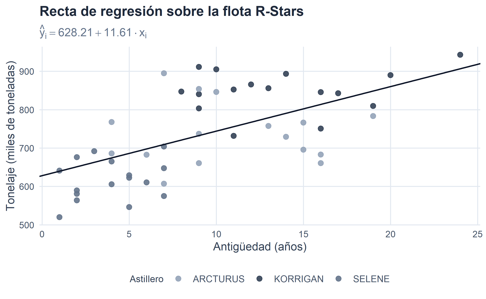
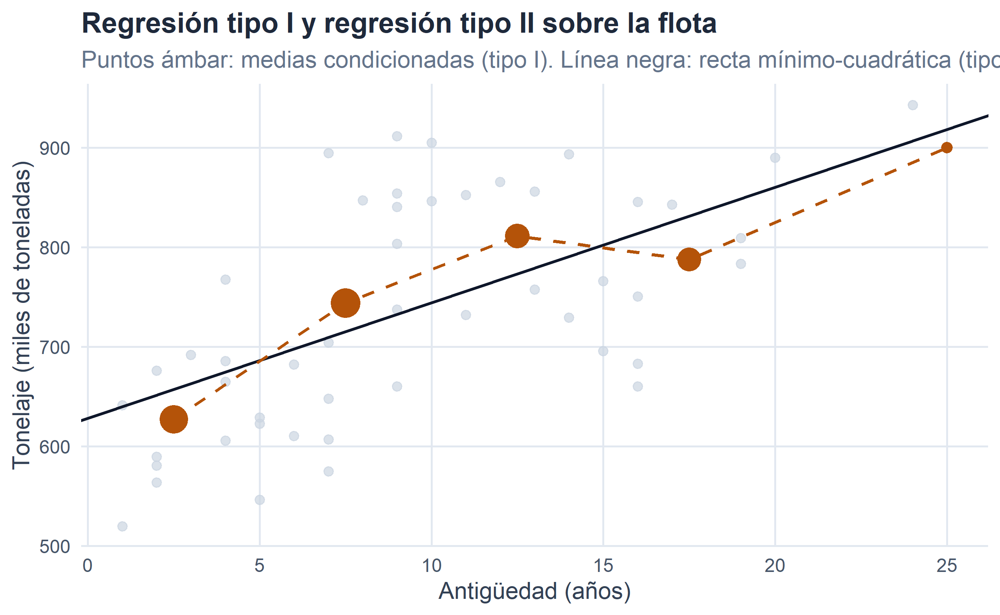
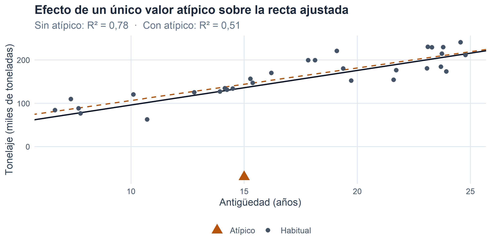
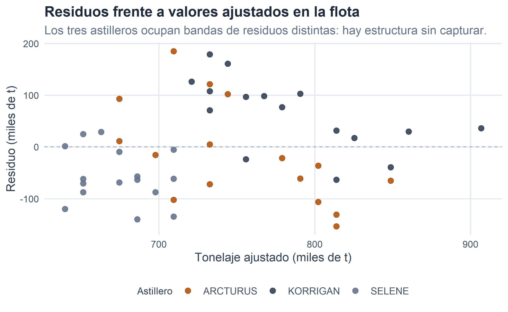
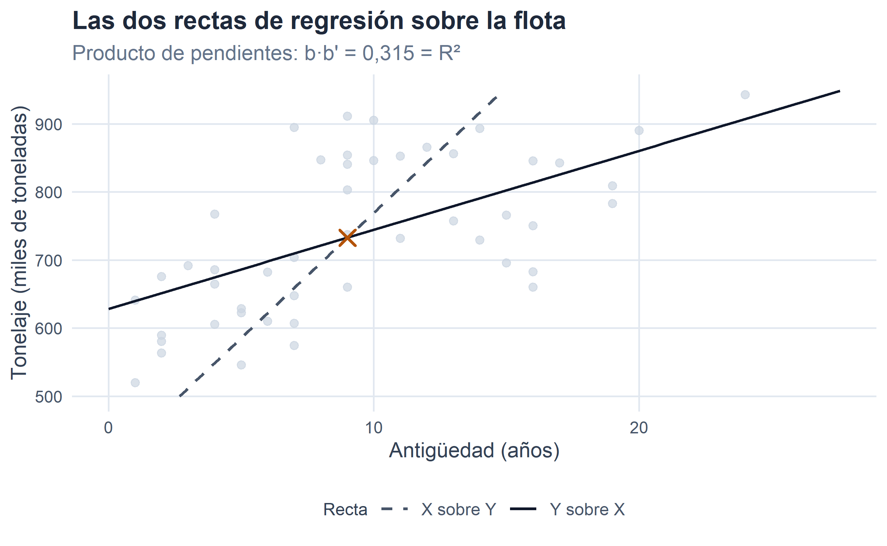
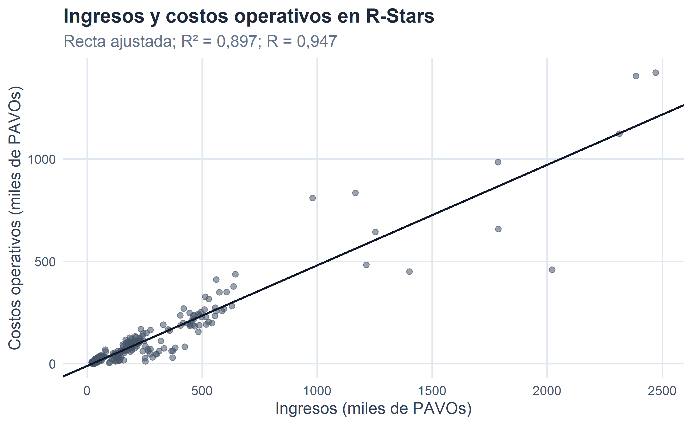
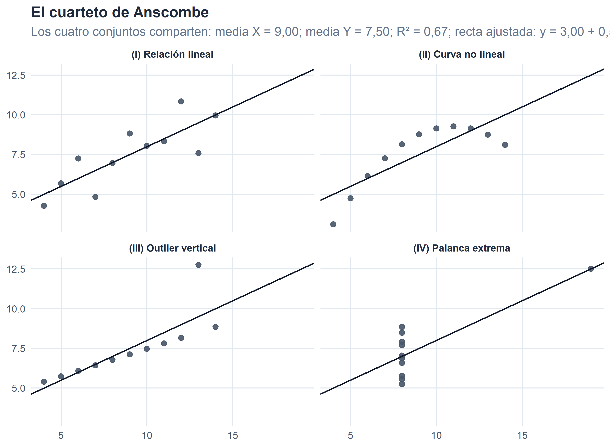
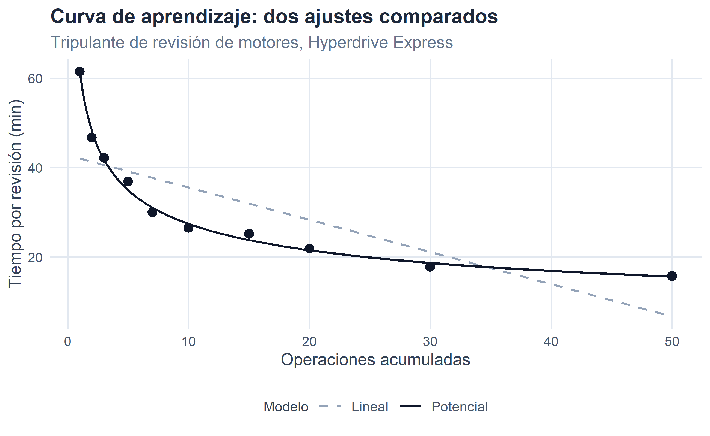

5 Regresión y correlación.
Figura 5.1. Cuando la relación existe, toca ponerle números: intensidad y forma.
En el capítulo anterior aprendimos a plantearnos una pregunta binaria —¿existe o no existe relación estadística entre estas dos variables?— y a contestarla con la ayuda de la tabla de correlación, las frecuencias condicionadas, el signo de la covarianza y, cuando ambas eran atributos, el estadístico ji-cuadrado. Terminamos la película con un puñado de casos en los que la respuesta era claramente afirmativa: en la plantilla de Shuttlepod Movers estudios y salario se movían juntos, en la flota de \(48\) cargueros la antigüedad iba de la mano del tonelaje, en los tres astilleros galácticos la sede base dependía por completo del constructor.
Detectada la dependencia, entramos ahora en el terreno de las preguntas cuantitativas. Aceptemos que las dos variables se relacionan y planteemos, con toda la sangre fría:
- ¿Con qué intensidad se relacionan? ¿Es una relación férrea, casi determinista, o apenas una tendencia con mucho ruido? Ese es el terreno del análisis de correlación.
- ¿Qué forma toma esa relación? ¿Podemos escribir una fórmula sencilla —una recta, una curva— que aproxime una variable a partir de la otra y permita prever valores? Ese es el terreno del análisis de regresión.
Correlación y regresión son las dos caras de la misma moneda: la primera mide cuánto se parecen dos variables en su comportamiento; la segunda propone cómo se parecen. Ambas dan por sentado —y este es un requisito irrenunciable— que en la etapa anterior hemos comprobado que hay algo que medir. Ajustar una regresión a dos variables independientes es como calcular la media geométrica de un conjunto de temperaturas: técnicamente posible, epistemológicamente estéril.
Advertimos ya un punto que reaparecerá en varios sitios del capítulo. Como en el anterior, relación estadística no es relación causal. La regresión que ajustemos entre dos variables y el coeficiente de correlación que resumamos entre ellas son descripciones matemáticas de un patrón común de comportamiento; nada nos dice, por sí mismos, que una variable esté causando a la otra. La tentación de leer una regresión como una explicación causal es probablemente el error más frecuente entre quienes empiezan —y también, todo hay que decirlo, entre bastantes que ya deberían haber dejado de empezar.
5.1 Regresión: idea general.
Supongamos que sobre cada individuo hemos medido dos variables cuantitativas \(X\) e \(Y\) y que, tras la exploración del capítulo anterior, sabemos que existe alguna dependencia estadística entre ellas. Uno de los papeles puede desempeñarlo cualquiera, pero en la práctica solemos designar a una de ellas como variable explicada o dependiente (habitualmente \(Y\), la que queremos aproximar o predecir) y a la otra como variable explicativa o independiente (habitualmente \(X\), aquella que consideramos “informativa” sobre la primera).
El análisis de regresión consiste en encontrar una función matemática
\[ \hat{y}_i \;=\; f(x_i) \]
que aproxime, lo mejor posible, los valores observados de \(Y\) a partir de los de \(X\). El sombrero sobre la \(y\) es una advertencia tipográfica útil: \(\hat{y}_i\) no es un valor observado, sino un valor propuesto por el modelo; el valor observado —el que aparece en el fichero, el que registra la nave, el que cobra el empleado— seguirá siendo \(y_j\).
Como ninguna función \(f\) podrá pasar por todos los puntos a la vez (el capítulo anterior nos advirtió que la vida no suele ser tan ordenada), la aproximación cometerá errores, uno por cada caso observado, que llamaremos residuos:
\[ e_{ij} \;=\; y_j - \hat{y}_i \;\;\Longleftrightarrow\;\; y_j \;=\; \hat{y}_i + e_{ij}. \]
La descomposición anterior es la más importante del capítulo y conviene fijarla desde ya: valor observado = valor previsto por la regresión + residuo. La regresión será tanto más útil cuanto más pequeños sean, en promedio, esos residuos.
5.1.1 Regresión simple, regresión múltiple.
Cuando la variable explicativa es una sola —el caso al que dedicaremos casi todo el capítulo— hablamos de regresión simple. Si hay varias, \(X_1, X_2, \ldots, X_p\), hablamos de regresión múltiple: la trataremos con brevedad al final, sin entrar en su maquinaria matricial.
5.1.2 Dos caminos hacia la regresión: tipo I y tipo II.
Hay una distinción clásica en la tradición estadística española —Martín-Pliego, Ruiz-Maya, Martín-Guzmán— entre dos maneras distintas de construir la función de regresión a partir de la tabla de correlación. Ambas son descriptivas, ambas viven íntegramente en el marco de este capítulo y ambas hablan del mismo objeto, pero llegan a él por caminos muy distintos.
Regresión de tipo I (también llamada intrínseca, o de la media, o en sentido estricto). Se apoya directamente en las distribuciones condicionadas que introdujimos en el capítulo anterior. Para cada valor \(x_i\) de la variable explicativa, calculamos la media de la variable explicada condicionada a ese valor,
\[ \overline{y}_{\,\mid\, x_i} \;=\; \dfrac{1}{n_{i\bullet}} \sum_{j=1}^{k} y_j\, n_{ij}, \]
y unimos los puntos \((x_i,\ \overline{y}_{\,\mid\, x_i})\). Esa colección de puntos —o la curva que los une— es la regresión de tipo I. Su gran virtud es que no impone forma funcional alguna: la propia tabla de datos, a través de sus medias condicionadas, decide qué curva dibujar. Su gran limitación es que no entrega una expresión analítica manejable: no podemos escribir “\(\hat{y} = 628{,}21 + 11{,}61\,x\)” ni hacer predicciones para valores de \(x\) que no aparezcan en la tabla.
Regresión de tipo II (también llamada funcional, o mínimo-cuadrática). Se elige a priori una forma funcional —una recta, una parábola, una potencial…— y se estiman sus parámetros por el criterio de mínimos cuadrados sobre toda la nube de puntos. El resultado es una función \(\hat{y}=f(x)\) con parámetros numéricos concretos, que interpola y extrapola con la comodidad de un modelo cerrado.
La relación entre ambas es preciosa y se demuestra sin dificultad: ajustar por mínimos cuadrados la nube completa es equivalente a ajustar por mínimos cuadrados los puntos \((x_i,\ \overline{y}_{\,\mid\, x_i})\) ponderados por las frecuencias marginales \(n_{i\bullet}\). Dicho de otro modo, la regresión de tipo II es la traducción analítica operativa de la regresión de tipo I: la primera nos da la fotografía real del comportamiento condicionado; la segunda le pone forma matemática. Cuando elegimos bien la forma funcional del tipo II, ambas coinciden con exactitud sobre los puntos de las medias; cuando la elegimos mal, la del tipo II se aparta de la del tipo I y su \(R^2\) paga el precio.
Aviso terminológico. Existe también un uso muy distinto del par “tipo I / tipo II” en la tradición biométrica anglosajona, donde se refiere a si solo la variable dependiente arrastra error de medida (tipo I, mínimos cuadrados ordinarios) o si ambas lo arrastran (tipo II, con métodos como el eje mayor tipificado o la regresión de Deming). No es la clasificación que empleamos aquí. Otra cosa distinta —también, a veces, fuente de confusión— es la diferencia entre la regresión descriptiva (sobre datos observados) y la regresión inferencial (sobre una población, con perturbación aleatoria \(\epsilon\) del tipo \(Y = \beta_0 + \beta_1 X + \epsilon\)). Esa distinción existe y es importante, pero no es la que la etiqueta “tipo I / tipo II” recoge en la tradición española; corresponde al paso de la estadística descriptiva a la inferencial y la trataremos en el bloque de Inferencia y Econometría.
En este capítulo trabajaremos, salvo aviso, con regresión de tipo II: elegiremos formas funcionales (casi siempre la recta) y estimaremos sus parámetros por mínimos cuadrados. Pero en el ejemplo de la flota veremos también la lectura de tipo I sobre los mismos datos, para hacer visible la relación entre ambas.
5.1.3 Forma funcional y parámetros.
Toda regresión consta de dos ingredientes que conviene distinguir con cuidado:
- La forma funcional, es decir, el tipo de función matemática que proponemos. Una recta, una parábola, una exponencial, una función logística… la elección es previa y refleja la hipótesis que hacemos sobre cómo se relacionan \(X\) e \(Y\).
- Los parámetros, esto es, las constantes que aparecen en la forma funcional (los coeficientes de la recta, los de la parábola, la base de la exponencial…), cuyos valores concretos hay que estimar a partir de los datos.
Un puñado de ejemplos ilustra la variedad de formas funcionales que podemos plantear:
\[ \begin{array}{ll} \hat{y}_i = a + b\, x_i & \text{(lineal)},\\[4pt] \hat{y}_i = a + b\, x_i + c\, x_i^{\,2} & \text{(parabólica)},\\[4pt] \hat{y}_i = a\cdot x_i^{\,b} & \text{(potencial)},\\[4pt] \hat{y}_i = a\cdot b^{\,x_i} & \text{(exponencial)},\\[4pt] \hat{y}_i = \dfrac{1}{1 + e^{-(a + b\, x_i)}} & \text{(logística)}. \end{array} \]
En cada forma, las letras \(a, b, c, \ldots\) son los parámetros a estimar. En la lineal hay dos (\(a\) y \(b\)), en la parabólica tres, en la potencial y en la exponencial dos… La forma la propone el analista (a menudo mirando la nube de puntos); los parámetros los proponen los datos.
La elección de la forma funcional es probablemente el momento más creativo —y más peligroso— del análisis. Una nube de puntos con forma de curva mansa se puede aproximar bien con una recta si uno cierra un ojo, o con un polinomio de grado siete si uno tiene menos escrúpulos que datos. La virtud del analista consiste en encontrar el equilibrio entre simplicidad (pocos parámetros, interpretación clara) y fidelidad (residuos pequeños). La regla del pulgar es preferir la forma más simple compatible con la estructura visible en la nube.
5.1.4 El criterio de estimación: mínimos cuadrados.
Fijada la forma funcional, quedan por concretar los valores de los parámetros. ¿Qué criterio nos dice que unos valores son mejores que otros? La respuesta —clásica, sencilla, y con el sello de Gauss y Legendre desde principios del siglo XIX— es el criterio de mínimos cuadrados: elegir aquellos parámetros que hagan mínima la suma de los cuadrados de los residuos, ponderados por la frecuencia de cada caso:
\[ \min_{\text{parámetros}} \;\; \sum_{i=1}^{h}\sum_{j=1}^{k} e_{ij}^{\,2}\, n_{ij} \;\;=\;\; \min_{\text{parámetros}} \;\; \sum_{i=1}^{h}\sum_{j=1}^{k} \bigl(y_j - \hat{y}_i\bigr)^{2}\, n_{ij}. \]
La elección del cuadrado no es caprichosa. Si sumásemos los residuos con su signo, los positivos y los negativos se cancelarían y el criterio sería trivialmente satisfecho por cualquier recta que pasara por el centro de la nube. Sumar los cuadrados evita esas cancelaciones, penaliza especialmente los residuos grandes (un residuo de \(10\) pesa cuatro veces más que uno de \(5\)) y —esto es lo que lo hace matemáticamente maravilloso— da lugar a un problema de minimización con solución cerrada, casi mágica, que se puede escribir con lápiz y papel. Otros criterios son concebibles (minimizar la suma de valores absolutos, minimizar el residuo máximo, etc.), pero el mínimo-cuadrático es el estándar universal y el que emplearemos.
5.2 Regresión lineal simple.
De todas las formas funcionales posibles, la más simple —y la que utilizaremos de referencia durante todo el capítulo— es la recta:
\[ \hat{y}_i \;=\; a + b\, x_i. \]
Los parámetros a estimar son el término independiente \(a\) (el valor que la regresión asigna a \(\hat{y}\) cuando \(x = 0\)) y la pendiente \(b\) (la variación de \(\hat{y}\) ante un incremento unitario de \(x\)). Aplicando el criterio de mínimos cuadrados,
\[ \min_{a, b} \;\; \sum_{i, j} \bigl(y_j - a - b\, x_i\bigr)^{2}\, n_{ij}, \]
y derivando respecto a \(a\) y \(b\) e igualando a cero, se obtiene el par de fórmulas que constituye la columna vertebral del capítulo:
\[ \boxed{\;\; \hat{b} \;=\; \dfrac{S_{xy}}{S_x^{\,2}}, \qquad \hat{a} \;=\; \overline{y} \;-\; \hat{b}\cdot \overline{x} \;\;} \]
Merece la pena leerlas despacio.
La pendiente \(\hat{b}\) es un cociente entre la covarianza \(S_{xy}\) —esa medida bidimensional que introdujimos en el capítulo anterior— y la varianza de la variable explicativa \(S_x^{\,2}\). La covarianza aporta el signo y el “acoplamiento direccional” entre \(X\) e \(Y\); la varianza de \(X\) normaliza para que el resultado esté expresado en unidades correctas (unidades de \(Y\) por cada unidad de \(X\)). Por eso \(\hat{b}\) hereda el signo de la covarianza: si \(S_{xy} > 0\), la recta sube; si \(S_{xy} < 0\), la recta baja.
El término independiente \(\hat{a}\), por su parte, se define de tal modo que la recta pase por el punto medio de la nube: el par \((\overline{x},\, \overline{y})\). Se comprueba en un segundo: si en \(\hat{y} = \hat{a} + \hat{b}\, x\) sustituimos \(x = \overline{x}\), obtenemos
\[ \hat{a} + \hat{b}\, \overline{x} \;=\; \overline{y} - \hat{b}\, \overline{x} + \hat{b}\, \overline{x} \;=\; \overline{y}. \]
Toda recta de regresión mínimo-cuadrática pasa por el centro de gravedad de la nube de puntos. Es una propiedad estética y práctica: la recta se ancla en el “punto promedio” y desde ahí gira para acomodarse lo mejor posible al resto.
5.2.1 Interpretación de los coeficientes.
- \(\hat{b}\): cuando \(x\) aumenta en una unidad, \(\hat{y}\) aumenta en \(\hat{b}\) unidades. Es la variación media de la variable explicada asociada a un incremento unitario de la explicativa. Se lee en unidades de \(Y\) por unidad de \(X\).
- \(\hat{a}\): valor que la regresión asigna a \(\hat{y}\) cuando \(x = 0\). Su interpretación literal muchas veces no tiene sentido económico (¿qué es una empresa con “cero ingresos”?), y en la práctica se usa sobre todo como parámetro de ajuste que permite fijar la recta.
Vale la pena insistir: el “\(+\)” o el “\(-\)” de \(\hat{b}\) no habla de causalidad, sino de la dirección conjunta del movimiento. Y su magnitud depende de las unidades: si cambiamos \(X\) de años a meses, \(\hat{b}\) se dividirá por doce. Para leer intensidades sin la tiranía de las unidades tendremos que esperar al coeficiente de correlación.
5.2.2 Un ejemplo completo: antigüedad y tonelaje en la flota de astilleros.
Volvamos a la muestra de 48 cargueros del sector R-Stars construidos por KORRIGAN, SELENE y ARCTURUS que ya nos sirvió en el capítulo anterior para introducir la covarianza. Recordamos el escenario: para cada nave conocemos su antigüedad \(X\) en años y su tonelaje máximo de carga útil \(Y\) en miles de toneladas, y calculamos, sobre la tabla agrupada, una covarianza \(S_{xy}\) claramente positiva. La pregunta que quedaba en el aire era: ¿podemos escribir una recta que resuma esa relación?
Aquí está la tabla de correlación (la misma con la que trabajamos en el capítulo anterior al introducir la covarianza), enriquecida ahora con las columnas y filas auxiliares que necesitamos para la regresión:
| \(x_i \setminus y_j\) | \(575\) | \(700\) | \(800\) | \(900\) | \(n_{i\bullet}\) | \(x_i n_{i\bullet}\) | \(x_i^{2} n_{i\bullet}\) |
|---|---|---|---|---|---|---|---|
| 2.5 | 9 | 4 | 1 | 0 | 14 | 35,00 | 87,50 |
| 7.5 | 4 | 4 | 4 | 4 | 16 | 120,00 | 900,00 |
| 12.5 | 0 | 3 | 2 | 4 | 9 | 112,50 | 1.406,25 |
| 17.5 | 0 | 2 | 5 | 1 | 8 | 140,00 | 2.450,00 |
| 25 | 0 | 0 | 0 | 1 | 1 | 25,00 | 625,00 |
| \(n_{\bullet j}\) | 13 | 13 | 12 | 10 | 48 | 432,50 | 5.468,75 |
| \(y_j\, n_{\bullet j}\) | 7.475 | 9.100 | 9.600 | 9.000 | 35.175 | ||
| \(y_j^{2}\, n_{\bullet j}\) | 4.298.125 | 6.370.000 | 7.680.000 | 8.100.000 | 26.448.125 |
Con las marcas de clase \(x_i \in \{2{,}5;\ 7{,}5;\ 12{,}5;\ 17{,}5;\ 25\}\) e \(y_j \in \{575;\ 700;\ 800;\ 900\}\), los momentos respecto al origen son los que ya calculamos en el capítulo 3, cuando obtuvimos la covarianza:
\[ a_{10} \;=\; 9,0104, \qquad a_{01} \;=\; 732,8125, \qquad a_{20} \;=\; 113,9323, \] \[ a_{02} \;=\; 551.002,6042, \qquad a_{11} \;=\; 6.983,0729. \]
Los momentos centrales que nos interesan son la varianza de \(X\), la varianza de \(Y\) y la covarianza:
\[ S_x^{\,2} \;=\; a_{20} - a_{10}^{\,2} \;=\; 32,7447,\qquad S_y^{\,2} \;=\; a_{02} - a_{01}^{\,2} \;=\; 13.988,44, \] \[ S_{xy} \;=\; a_{11} - a_{10}\cdot a_{01} \;=\; 380,1270. \]
Aplicando ahora las fórmulas de la recta mínimo-cuadrática,
\[ \hat{b} \;=\; \dfrac{S_{xy}}{S_x^{\,2}} \;=\; \dfrac{380,1270}{32,7447} \;=\; 11,6088, \]
\[ \hat{a} \;=\; \overline{y} - \hat{b}\cdot \overline{x} \;=\; 732,8125 \;-\; 11,6088\cdot 9,0104 \;=\; 628,2122. \]
La recta de regresión de tonelaje sobre antigüedad es, por tanto,
\[ \boxed{\;\; \hat{y}_i \;=\; 628,21 \;+\; 11,61\cdot x_i \;\;} \]
y su lectura práctica es transparente: cada año adicional de antigüedad se asocia, en promedio, con unos 11,61 miles de toneladas más de capacidad de carga. Un carguero recién estrenado (\(x=0\)) tendría, según la recta, unas \(628\) mil toneladas de tonelaje típico; un carguero de \(10\) años se acerca a las \(744\) mil; uno de \(20\), a las \(860\). La flota galáctica se ha ido —dicho llanamente— aligerando.
Podemos comprobar visualmente el ajuste sobre la nube de puntos original (los \(48\) cargueros sin agrupar):

Figura 5.2. Diagrama de dispersión de la flota y recta ajustada por mínimos cuadrados.
La recta atraviesa la nube con obediencia razonable, pero es evidente que la dispersión alrededor de ella no es despreciable: hay cargueros viejos y ligeros, cargueros nuevos y pesados. La nube tiene una tendencia clara, sí; pero también un ruido considerable. Cuantificar cuán bien —o cuán mal— la recta representa a la nube es la tarea de la sección siguiente.
Antes de eso, un pequeño paréntesis muy útil en la práctica moderna: todo lo que hemos calculado a mano cabe en dos líneas de R. La función lm() (por linear model) ajusta la recta y guarda todos los resultados en un objeto que después puede consultarse con summary(), coef(), residuals() y compañía:
## (Intercept) ANTIG
## 615.01272 12.64932Los dos números que devuelve —(Intercept) y ANTIG— son exactamente \(\hat{a}\) y \(\hat{b}\) que hemos obtenido a pulso, salvo diferencias de redondeo por trabajar sobre los datos individuales en lugar de la tabla agrupada. La mecánica manual del capítulo tiene una función pedagógica; en la vida real, todo el mundo hace lm(). Ver que ambos caminos llevan al mismo sitio es parte del aprendizaje.
5.2.3 Regresión de tipo I sobre la flota.
Un buen momento para asomarnos a la regresión de tipo I que anunciábamos en la sección anterior. Con la misma tabla agrupada de la flota, calculamos, para cada intervalo de antigüedad, la media condicionada del tonelaje:
| \(x_i\) (años) | \(n_{i\bullet}\) | \(\overline{y}_{\,\mid\, x_i}\) (miles de t) |
|---|---|---|
| 2.5 | 14 | 626.79 |
| 7.5 | 16 | 743.75 |
| 12.5 | 9 | 811.11 |
| 17.5 | 8 | 787.50 |
| 25.0 | 1 | 900.00 |
Los cinco puntos \((2{,}5;\ 626{,}79)\), \((7{,}5;\ 743{,}75)\), \((12{,}5;\ 811{,}11)\), \((17{,}5;\ 787{,}50)\), \((25;\ 900)\) son la regresión de tipo I: no imponemos ninguna forma funcional, las medias condicionadas hablan por sí solas. Se lee que el tonelaje típico crece con la antigüedad, pero no de forma perfectamente monótona (el cuarto intervalo se aparta ligeramente hacia abajo) y con un último punto —la solitaria nave de \(25\) años— que arrastra la tendencia al alza. Es lo que la nube de puntos condicionada nos dice de verdad, sin la simplificación de una recta.
Comparemos gráficamente ambas regresiones sobre los mismos datos:

Figura 5.3. Regresión de tipo I (puntos oscuros: medias condicionadas del tonelaje por intervalo de antigüedad, con tamaño proporcional a la frecuencia) frente a regresión de tipo II (recta mínimo-cuadrática) sobre la flota.
Y aquí una comprobación numérica que ilustra la propiedad de equivalencia: si ajustamos por mínimos cuadrados una recta a los cinco puntos de las medias condicionadas ponderándolos por sus frecuencias \(n_{i\bullet}\), obtenemos exactamente los mismos coeficientes que ajustar la recta a los \(48\) cargueros originales. La regresión de tipo II es —literalmente— la traducción analítica lineal de la regresión de tipo I.
# MCO sobre los 5 puntos (xi, medias_cond) ponderados por n_i
xbar_c <- sum(xi * ni_ast) / N_ast
ybar_c <- sum(medias_cond * ni_ast) / N_ast
Sxy_c <- sum((xi - xbar_c) * (medias_cond - ybar_c) * ni_ast) / N_ast
Sx2_c <- sum((xi - xbar_c)^2 * ni_ast) / N_ast
b_tipo1 <- Sxy_c / Sx2_c
a_tipo1 <- ybar_c - b_tipo1 * xbar_c
c(a_tipo1 = a_tipo1, b_tipo1 = b_tipo1) # coinciden con a_hat y b_hat## a_tipo1 b_tipo1
## 628.21224 11.608815.2.4 Predicción y una advertencia importante.
Una vez estimada la recta, uno de sus usos naturales es prever el valor de \(Y\) para valores de \(X\) no observados directamente. Si un potencial cliente pregunta cuál sería el tonelaje típico de un carguero con \(22\) años de servicio, la recta responde sin dudar:
\[ \hat{y}(22) \;=\; 628,21 + 11,61\cdot 22 \;=\; 883,61 \ \text{miles de toneladas}. \]
Predicción y previsión son la aplicación más popular de la regresión: no en vano media econometría del mundo se dedica a estimar rectas para preguntarles cosas después. Ahora bien, un aviso que las guías galácticas de buenas prácticas repiten cada mes en su portada:
Advertencia sobre la extrapolación. La recta se ha ajustado sobre un rango de valores concreto de la variable explicativa. En nuestro caso, la antigüedad de los cargueros observados va aproximadamente de \(2\) a \(22\) años. Fuera de ese rango, la regresión pierde toda garantía. Preguntar por el tonelaje de un carguero de \(80\) años no es hacer una previsión; es hacer un acto de fe. La estructura que hemos observado puede quebrarse en los extremos, aparecer cambios de régimen, o sencillamente entrar en zonas donde no hay datos que respalden la extrapolación.
Por otro lado, la recta no es una promesa sobre casos individuales: para un carguero concreto de \(22\) años, el tonelaje real puede desviarse notablemente del pronóstico. La regresión predice promedios, no individuos. Si el residuo típico es de \(70\) mil toneladas, el pronóstico “\(893\)” hay que leerlo como “en torno a \(893\), con un margen de error del orden de decenas de miles de toneladas”.
5.2.5 La sensibilidad a valores atípicos.
Un aspecto que la fórmula \(\hat{b} = S_{xy}/S_x^{\,2}\) oculta pero que aparece con toda su virulencia en cuanto uno tiene datos reales entre las manos: la regresión mínimo-cuadrática es muy sensible a los valores atípicos. Basta con un solo punto lo bastante alejado del patrón general para que la recta gire de forma llamativa y el \(R^{2}\) se venga abajo.
Ilustrémoslo con un experimento controlado. Simulamos una nube “limpia” de \(30\) observaciones que siguen una relación aproximadamente lineal —piénsese en una flota nueva, bien gestionada— y añadimos después un solo carguero anómalo: uno de los prototipos de emergencia de Wraith Industries, extremadamente ligero pese a llevar años en servicio, que quedaría fuera del comportamiento habitual del sector:

Figure 5.1: Efecto de un único valor atípico sobre la recta de regresión. Comparen la línea negra continua (con el atípico) con la discontinua ámbar (sin él): el ajuste cambia sustancialmente y el \(R^{2}\) se hunde.
La caída del \(R^{2}\) es brutal —del \(83\,\%\) al \(26\,\%\)— y la pendiente y la ordenada se distorsionan aunque solo hayamos añadido una observación al conjunto original de treinta. Ese es el precio de haber elegido el criterio de mínimos cuadrados: penalizar el residuo al cuadrado hace que un solo caso muy alejado tenga una fuerza desproporcionada. Alternativas más robustas —regresión mediana, regresión con función de pérdida de Huber, mínimos absolutos— existen y forman parte del arsenal de la estadística moderna; en un curso introductorio nos basta con haber visto el peligro y saber mirar la nube de puntos antes de dejarnos guiar por los coeficientes.
5.3 Bondad del ajuste: el coeficiente de determinación.
Ya sabemos ajustar una recta a una nube de puntos. La pregunta pendiente es: ¿lo hace bien? Dicho de otro modo: ¿en qué medida los valores previstos \(\hat{y}_i\) reproducen los valores realmente observados \(y_j\)? Necesitamos una medida numérica de la calidad del ajuste que sea comparable entre distintas regresiones y no dependa de las unidades de las variables.
La idea que hay debajo es tan intuitiva que casi resulta demasiado simple. Descompongamos el desvío de cada observación respecto a la media de \(Y\):
\[ y_j - \overline{y} \;=\; \underbrace{\hat{y}_i - \overline{y}}_{\text{parte explicada}} \;+\; \underbrace{e_{ij}}_{\text{parte no explicada}}. \]
La lectura es la que sugiere el diagrama: parte de lo que un valor observado se aparta de la media global la “explica” la regresión (la recta lo lleva desde el nivel \(\overline{y}\) hasta \(\hat{y}_i\)), y otra parte queda sin explicar (el residuo \(e_{ij}\), el trecho que queda entre el pronóstico y el valor real). Elevando al cuadrado, sumando sobre todos los casos con sus frecuencias, dividiendo por \(N\) y aprovechando una propiedad que la regresión mínimo-cuadrática garantiza —el término cruzado se anula— se llega a la descomposición de la varianza:
\[ \underbrace{\dfrac{\sum_j (y_j - \overline{y})^{2}\, n_{\bullet j}}{N}}_{S_y^{\,2}\ \text{(varianza total)}} \;\;=\;\; \underbrace{\dfrac{\sum_i (\hat{y}_i - \overline{y})^{2}\, n_{i\bullet}}{N}}_{S_{\hat{y}}^{\,2}\ \text{(varianza explicada)}} \;\;+\;\; \underbrace{\dfrac{\sum_{i,j} e_{ij}^{\,2}\, n_{ij}}{N}}_{S_e^{\,2}\ \text{(varianza residual)}}. \]
En palabras: la varianza total de \(Y\) se descompone en la parte que la regresión es capaz de reproducir (la varianza de los pronósticos \(\hat{y}_i\)) más la parte que queda como ruido (la varianza de los residuos). Como los tres términos son cantidades positivas y la primera es fija —depende solo de los datos— el problema de ajustar la regresión se puede releer así: cuanto mayor sea \(S_{\hat{y}}^{\,2}\), mejor el ajuste; cuanto menor sea \(S_e^{\,2}\), mejor también. Y estas dos cantidades varían al unísono.
De ahí la definición canónica del coeficiente de determinación:
\[ \boxed{\;\; R^{2} \;=\; \dfrac{S_{\hat{y}}^{\,2}}{S_y^{\,2}} \;=\; 1 - \dfrac{S_e^{\,2}}{S_y^{\,2}} \;\;} \]
\(R^2\) es, sin más, la proporción de la varianza de \(Y\) que la regresión es capaz de reproducir. Como cociente de dos varianzas positivas —una menor o igual que la otra— cumple \(0 \le R^2 \le 1\). Y su lectura no puede ser más agradecida:
- \(R^{2}\) próximo a \(1\): la regresión captura casi toda la variabilidad de \(Y\). El ajuste es excelente.
- \(R^{2}\) próximo a \(0\): la regresión no captura nada. La recta es prácticamente horizontal y pasa por \(\overline{y}\); conocer \(X\) no ayuda a predecir \(Y\).
- Valores intermedios se interpretan como porcentajes: un \(R^{2}\) de \(0{,}70\) significa que el modelo reproduce el \(70\,\%\) de la variabilidad observada.
En el caso lineal, un pequeño desarrollo algebraico entrega una fórmula compacta muy útil para calcular \(R^{2}\) directamente a partir de los momentos:
\[ R^{2} \;=\; \dfrac{S_{xy}^{\,2}}{S_x^{\,2}\cdot S_y^{\,2}}. \]
5.3.1 Vuelta a la flota.
Con los momentos que ya tenemos calculados para el ejemplo de los astilleros:
\[ R^{2} \;=\; \dfrac{S_{xy}^{\,2}}{S_x^{\,2}\cdot S_y^{\,2}} \;=\; \dfrac{380,1270^{2}}{32,7447\cdot 13.988,44} \;=\; 0,3155. \]
Interpretación: la recta que hemos estimado reproduce, aproximadamente, el 31,5,% de la variabilidad del tonelaje de la flota. No es un mal resultado —hay un patrón claro, y una recta lo captura razonablemente— pero tampoco es un ajuste espectacular: casi dos tercios de la variabilidad observada del tonelaje son atribuibles a factores distintos de la antigüedad. Basta con mirar el gráfico anterior para comprender por qué: cargueros del mismo astillero y de antigüedades similares tienen tonelajes muy distintos, y hay una segmentación evidente por astillero (KORRIGAN construye típicamente más pesado que ARCTURUS). Una regresión de tonelaje sobre astillero, o una regresión múltiple que incluya ambos factores, mejoraría muy probablemente el ajuste.
Un \(R^{2}\) moderado no es sinónimo de “regresión mala”: es sinónimo de “conocer \(X\) no basta para saberlo todo sobre \(Y\)”. En Ciencias Sociales, un \(R^{2}\) de \(0{,}3\) suele ser un logro respetable —los seres humanos son notoriamente ruidosos— mientras que en Física un \(R^{2}\) de \(0{,}9\) puede indicar un error de calibración. Todo depende del terreno de juego.
5.3.2 Los residuos como diagnóstico.
El \(R^{2}\) resume la calidad del ajuste en un único número, pero los residuos son los que dicen dónde falla el modelo. Si están repartidos al azar alrededor del cero, sin patrón visible, la regresión ha hecho su trabajo. Si en cambio se agrupan sistemáticamente por encima o por debajo de la línea del cero para ciertos valores de \(X\) o para ciertos subgrupos de la muestra, la nube está pidiendo un modelo mejor.
En el caso de la flota, un gráfico de residuos frente a valores ajustados, coloreado por astillero, revela con toda claridad la fuente del \(R^{2}\) modesto:

Figura 5.4. Residuos frente a valores ajustados en la flota, por astillero. La estructura del color muestra que la antigüedad, por sí sola, no capta la segmentación por constructor.
La lectura es inequívoca. Los residuos no están mezclados al azar: KORRIGAN aparece sistemáticamente por encima del cero (sus cargueros son consistentemente más pesados de lo que la antigüedad sola predice), ARCTURUS ocupa la banda inferior (más ligeros de lo esperado) y SELENE se sitúa en la zona intermedia. La antigüedad, tomada aislada, mezcla tres poblaciones que se comportan diferente. El diagnóstico de residuos ha detectado con precisión qué le falta al modelo, y sugiere la corrección natural: incluir la identidad del astillero como segunda variable explicativa. Volveremos a esta idea al final del capítulo, en la sección de regresión múltiple.
5.4 Correlación.
El coeficiente de determinación \(R^{2}\) nos dice, en un solo número entre \(0\) y \(1\), con qué calidad la regresión reproduce los datos. Ahora bien, esa calidad depende de dos cosas distintas que conviene no confundir:
- Si la forma funcional propuesta es adecuada. Con datos que se distribuyen en forma de \(U\), una recta obtendrá un \(R^{2}\) paupérrimo aunque la relación estadística sea muy intensa: el problema está en la elección de la forma, no en la relación.
- Si la relación estadística real entre las dos variables es intensa o débil. Con datos que se dispersan mucho alrededor de la mejor recta posible, el \(R^{2}\) será bajo aunque la forma funcional sea la correcta.
En el análisis de correlación damos por supuesto lo primero —hemos elegido bien la forma funcional, típicamente la lineal— y usamos el ajuste para medir lo segundo: cuán intensa es la relación. La medida canónica es el coeficiente de correlación lineal, que definimos como
\[ R \;=\; \pm\sqrt{R^{2}} \;=\; \pm\sqrt{\,1 - \dfrac{S_e^{\,2}}{S_y^{\,2}}\,}, \]
con el signo de la covarianza (positivo si \(S_{xy} > 0\), negativo si \(S_{xy} < 0\)). En el caso lineal, la expresión se compacta hasta la elegantísima forma cerrada
\[ \boxed{\;\; R \;=\; \dfrac{S_{xy}}{S_x \cdot S_y} \;\;} \]
donde \(S_x\) y \(S_y\) son las desviaciones típicas marginales. La lectura es doble:
- Signo: heredado de la covarianza. Positivo cuando las dos variables tienden a moverse en el mismo sentido; negativo cuando lo hacen en sentidos opuestos.
-
Magnitud: el valor absoluto de \(R\) mide la intensidad de la relación lineal. Por construcción, \(-1 \le R \le +1\). Los extremos representan situaciones ideales:
- \(R = +1\): todos los puntos caen exactamente sobre una recta de pendiente positiva. Dependencia lineal perfecta y directa.
- \(R = -1\): todos los puntos caen exactamente sobre una recta de pendiente negativa. Dependencia lineal perfecta e inversa.
- \(R = 0\): no hay relación lineal (aunque, cuidado, sí puede haber relaciones no lineales que \(R\) no ve).
Una escala orientativa —no un tribunal universal— que suele emplearse para calificar la intensidad de \(R\):
| \(|R|\) | Lectura habitual |
|---|---|
| \(0{,}0\)–\(0{,}2\) | Relación lineal muy débil o inexistente. |
| \(0{,}2\)–\(0{,}5\) | Relación lineal débil. |
| \(0{,}5\)–\(0{,}7\) | Relación lineal moderada. |
| \(0{,}7\)–\(0{,}9\) | Relación lineal fuerte. |
| \(0{,}9\)–\(1{,}0\) | Relación lineal muy fuerte, casi determinista. |
Tabla 5.1. Escala orientativa para \(|R|\) en el análisis descriptivo.
5.4.1 El coeficiente de correlación en la flota.
Retomamos, por última vez en esta sección, la flota de astilleros. Como \(S_{xy} > 0\), el signo de \(R\) es positivo, y
\[ R \;=\; \dfrac{S_{xy}}{S_x \cdot S_y} \;=\; \dfrac{380,1270}{\sqrt{32,7447}\cdot \sqrt{13.988,44}} \;=\; 0,5617. \]
Un \(R = 0,56\) cae en el terreno de las relaciones moderadas: coherente con lo que ya sabíamos —la nube de puntos tenía tendencia clara pero considerable dispersión— y con el \(R^{2}\) que habíamos calculado, del que este \(R\) es literalmente la raíz cuadrada con el signo de la covarianza.
Un detalle numérico digno de mención: si comparamos el \(R^{2}\) que hemos obtenido sobre la tabla agrupada (\(R^{2} = 0,315\)) con el que se obtendría sobre los datos individuales de los \(48\) cargueros sin agrupar (aproximadamente \(0{,}39\)), veremos que el segundo es ligeramente mayor. La razón es sencilla: al agrupar en intervalos, sustituimos cada valor por la marca de clase de su intervalo y con ello perdemos algo de información sobre la variabilidad. En estadística descriptiva es un compromiso habitual —ganamos en manejabilidad, perdemos algo en precisión— y forma parte de la mecánica de trabajar con tablas.
5.4.2 Las dos rectas de regresión.
En el capítulo anterior, al presentar las frecuencias condicionadas, insistimos en que un mismo cruce admite dos lecturas simétricas —\(X\) dada \(Y\) y \(Y\) dada \(X\)— que responden a preguntas distintas. Esa dualidad reaparece con toda su fuerza en el análisis de regresión: sobre una misma nube de puntos podemos ajustar dos rectas, no solo una.
Hasta ahora hemos trabajado con la recta de \(Y\) sobre \(X\), la que responde a “conocida la antigüedad, ¿cuánto tonelaje cabe esperar?” y minimiza los residuos verticales \(y_j - \hat{y}_i\). Pero podríamos plantear igualmente la pregunta inversa: “conocido el tonelaje, ¿qué antigüedad cabría esperar en un carguero así?”. La respuesta es la recta de \(X\) sobre \(Y\), que minimiza los residuos horizontales \(x_i - \hat{x}_j\) y tiene por fórmula
\[ \hat{x}_j \;=\; \hat{a}' + \hat{b}'\, y_j, \qquad \hat{b}' \;=\; \dfrac{S_{xy}}{S_y^{\,2}}, \qquad \hat{a}' \;=\; \overline{x} - \hat{b}'\, \overline{y}. \]
Nótese la asimetría: la pendiente de la recta de \(Y\) sobre \(X\) divide por \(S_x^{\,2}\); la de la recta de \(X\) sobre \(Y\) divide por \(S_y^{\,2}\). Son distintas y no son la misma recta despejada al revés (salvo en un caso trivial que veremos enseguida).
En la flota:
\[ \hat{b}' \;=\; \dfrac{S_{xy}}{S_y^{\,2}} \;=\; \dfrac{380,13}{13.988,44} \;=\; 0,02717, \qquad \hat{a}' \;=\; 9,01 \;-\; 0,02717\cdot 732,81 \;=\; -10,90. \]
Sus lecturas son diferentes pero complementarias. La primera recta dice “por cada año más de antigüedad, esperemos \(11{,}61\) mil toneladas más de tonelaje”; la segunda dice “por cada mil toneladas más de tonelaje, esperemos \(0{,}027\) años más de antigüedad”. Preguntas distintas, respuestas distintas.
Y ahora la propiedad que da la conexión con la correlación. Multiplicando las dos pendientes,
\[ \hat{b}\cdot \hat{b}' \;=\; \dfrac{S_{xy}}{S_x^{\,2}}\cdot \dfrac{S_{xy}}{S_y^{\,2}} \;=\; \dfrac{S_{xy}^{\,2}}{S_x^{\,2}\cdot S_y^{\,2}} \;=\; R^{2}. \]
Es decir: el producto de las pendientes de las dos rectas de regresión es exactamente el coeficiente de determinación. En nuestro caso, \(11,6088\cdot 0,02717 = 0,3155\), que coincide (salvo redondeo) con el \(R^{2} = 0,3155\) que calculamos antes. Es una elegantísima identidad que suele memorizarse por su forma compacta:
\[ \boxed{\;\; \hat{b}\cdot \hat{b}' \;=\; R^{2} \;\;} \]
Y esa fórmula nos dice también qué relación geométrica hay entre las dos rectas:
- Cuando \(R^{2} = 1\), el producto \(\hat{b}\cdot \hat{b}'\) vale \(1\); las dos pendientes son inversas y las dos rectas coinciden. Es la dependencia lineal perfecta: conocer una variable determina exactamente la otra, en ambas direcciones.
- Cuando \(R^{2} = 0\), el producto es \(0\); una de las pendientes es cero, la recta correspondiente es horizontal y la otra es vertical. Las dos rectas se cruzan perpendicularmente, y coincide con el hecho de que no hay relación lineal alguna.
- Cuando \(R^{2}\) es intermedio, las dos rectas forman una “tijera” alrededor del centro de gravedad de la nube, cuya apertura se estrecha a medida que \(R^{2}\) crece hacia \(1\).
Un gráfico lo hace evidente:

Figure 5.2: Las dos rectas de regresión sobre la flota. Se cruzan en el centro de gravedad \((\overline{x},\ \overline{y})\) y su apertura mide indirectamente la dispersión de la nube.
Las dos rectas se abren en abanico desde el punto \((\overline{x},\ \overline{y})\) señalado con la cruz ámbar. Si el \(R^{2}\) hubiese sido más alto, las dos rectas estarían más cerca la una de la otra; si hubiese sido más bajo, se abrirían aún más hasta acercarse a la perpendicularidad. La apertura del abanico es, literalmente, una lectura visual de \(R^{2}\).
5.4.3 Un ejemplo con ajuste excelente: ingresos y costos operativos en R-Stars.
Un \(R^{2}\) moderado como el de la flota puede dejarnos con dudas legítimas sobre si la regresión “vale la pena”. Para calibrar, echemos un vistazo a un cruce en el que la relación lineal es contundente. Sobre las \(N = 300\) compañías del sector R-Stars, dispongamos en un lado los ingresos de cada compañía (ING, en miles de PAVOs) y en el otro sus costos operativos (COSTOP, también en miles de PAVOs). La intuición económica es clara —a mayor volumen de actividad, mayores costes de operación— y los datos, esta vez, no van a discutirle nada al intuición.

Figura 5.5. Nube de puntos y recta de regresión sobre las 300 compañías de la muestra R-Stars.
Los coeficientes de la recta ajustada son
\[ \hat{a} \;=\; -9,41, \qquad \hat{b} \;=\; 0,4909, \]
es decir,
\[ \hat{y}_i \;=\; -9,41 \;+\; 0,4909\cdot x_i, \]
y por cada mil PAVOs adicionales de ingresos, los costos operativos se elevan, en promedio, unos \(491\) PAVOs (dicho en corto: cerca de la mitad de cada PAVO facturado acaba absorbido por el coste operativo, un margen bruto que en el sector interestelar no sorprende a nadie). El coeficiente de correlación y el de determinación,
\[ R^{2} \;=\; 0,8968, \qquad R \;=\; 0,9470, \]
reflejan una relación lineal muy fuerte, casi determinista: la recta reproduce el \(89,7\,\%\) de la variabilidad de los costes. Es lo que en la práctica se llama, con toda propiedad, una relación bien portada.
5.4.4 Un aviso importante: el cuarteto de Anscombe.
Antes de dar por buena la lectura del \(R\) y del \(R^{2}\) como resumen de una relación, conviene detenerse en uno de los ejemplos más citados —y más aleccionadores— de la historia de la estadística. En \(1973\), el estadístico británico Francis Anscombe publicó un pequeño artículo con cuatro conjuntos de datos que compartían exactamente las mismas medias, las mismas varianzas, la misma covarianza, la misma recta ajustada y el mismo \(R^{2}\) (con cuatro decimales de precisión), y que sin embargo, al dibujar la nube, se comportaban de formas radicalmente distintas.
Es el llamado cuarteto de Anscombe, que forma parte del propio R como datasets::anscombe. Reproducirlo lleva quince líneas:

Figure 5.3: El cuarteto de Anscombe. Los cuatro conjuntos comparten media, varianza, covarianza, coeficientes de la recta ajustada y \(R^{2}\) hasta la segunda cifra decimal. Solo el conjunto (I) responde a un ajuste lineal genuino.
Las cuatro fotografías son un manifiesto pedagógico. En el panel (I), la recta ajusta un patrón lineal auténtico, y el \(R^{2} \approx 0{,}67\) tiene el sentido natural que le asignamos. En (II), la relación es claramente cuadrática: la recta lineal es una respuesta equivocada a la pregunta correcta, y el \(R^{2}\) solo la refleja porque la parábola es aproximadamente lineal en un rango. En (III), hay una relación lineal perfecta en todos los puntos menos uno; ese único outlier tira de la recta hacia sí y contamina el resumen. En (IV), el \(R^{2}\) y la recta están dictados por un solo punto situado muy lejos de los demás: retirarlo dejaría al modelo sin nada que decir, porque los diez restantes tienen todos \(x=8\) y no informan sobre la pendiente. Es lo que en la jerga se llama un punto de alta palanca (o leverage).
La moraleja se enuncia con toda sencillez: el \(R^{2}\) y los coeficientes de la recta son resúmenes, no diagnósticos. Nunca deberían leerse sin dibujar la nube. En 2013, los estadísticos Justin Matejka y George Fitzmaurice llevaron la idea al extremo con el Datasaurus Dozen, doce conjuntos de puntos con los mismos estadísticos hasta la segunda cifra decimal que dibujan, según el caso, un dinosaurio, una estrella o dos círculos concéntricos. Si Anscombe fue un aviso, el Datasaurus es una carcajada; ambos apuntan al mismo consejo profesional: mira la nube antes de creerte el número.
5.4.5 Correlación no implica causalidad (bis).
El aviso ya lo dimos en el capítulo anterior, pero conviene actualizarlo con la munición del presente. Un coeficiente de correlación alto entre dos variables no permite —por sí mismo— extraer ninguna conclusión sobre relaciones de causa a efecto. Es fácil imaginarse el desastre argumental que se puede montar con un \(R\) elevado y un poco de mala fe:
- Ingresos y costos operativos de las compañías R-Stars tienen \(R = 0,95\). ¿Los ingresos “causan” los costos? Uno podría defenderlo. ¿Los costos “causan” los ingresos? Otro podría defender lo contrario con la misma insolencia. La verdad prosaica es que ambos crecen porque las compañías crecen: los dos son manifestaciones de una tercera variable —el tamaño de la actividad— que actúa como causa común.
- La antigüedad y el tonelaje de los cargueros correlacionan positivamente. Pero la antigüedad no causa el tonelaje (los cargueros no engordan con los años); lo que ocurre es que los astilleros galácticos han cambiado su cartera de productos con el tiempo, y hoy fabrican más ligero que hace dos décadas. La causa vuelve a estar en una variable externa, la política comercial del sector.
En la literatura anglosajona se ha popularizado la expresión “correlation is not causation” hasta convertirla casi en un cliché de sobremesa; el cliché, sin embargo, protege de errores muy caros. La regla operativa que interesa recordar es que la correlación —y la regresión que la acompaña— describen un patrón de comportamiento común entre dos variables. Interpretarlo causalmente exige, además, un modelo teórico y un diseño de investigación que permitan descartar otras explicaciones. La estadística descriptiva es un observador imparcial: no señala culpables.
5.5 Generalización de la regresión.
Hasta aquí hemos jugado en un tablero cómodo: una única variable explicativa y una recta como forma funcional. Los dos supuestos se pueden —y se deben— relajar en muchas situaciones reales. Cerramos el capítulo con dos vías de generalización.
5.5.1 Casos no lineales: linealización.
Cuando la nube de puntos no dibuja una tendencia rectilínea sino claramente curvada, ajustar una recta puede ser un ejercicio de estoicismo estadístico: el \(R^{2}\) se resiente, los residuos muestran un patrón sistemático (por ejemplo, primero positivos, luego negativos, luego positivos otra vez) y la interpretación pierde solidez. En muchas ocasiones, sin embargo, la relación no lineal se puede linealizar —transformar los valores de una o de ambas variables— de modo que sobre las nuevas variables sí quepa una recta.
Los dos casos clásicos son:
- Potencial: \(\hat{y}_i = a\cdot x_i^{\,b}\). Tomando logaritmos, \(\log \hat{y}_i = \log a + b\cdot \log x_i\): si sustituimos \(x_i^{*} = \log x_i\) e \(y_j^{*} = \log y_j\), obtenemos una recta con pendiente \(b\) y ordenada \(\log a\). Los parámetros \(a\) y \(b\) se recuperan al final (\(a = e^{\log a}\), \(b\) tal cual).
- Exponencial: \(\hat{y}_i = a\cdot b^{\,x_i}\). Tomando logaritmos, \(\log \hat{y}_i = \log a + x_i\cdot \log b\): una recta sobre \(x\) y \(\log y\).
La estrategia es siempre la misma: se transforman los datos, se ajusta una regresión lineal mínimo-cuadrática sobre las variables transformadas, y se deshace la transformación para leer los parámetros originales. El \(R^{2}\) del ajuste linealizado suele ser mucho más alto que el del ajuste directo, y refleja la calidad real de la aproximación.
5.5.2 Un caso ilustrativo: la curva de aprendizaje en Hyperdrive Express.
La compañía Hyperdrive Express —que ya nos ha acompañado en varios capítulos como paradigma de gran operador galáctico— acaba de incorporar a su hangar central un módulo experimental de revisión de motores de curvatura. Sus ingenieros han cronometrado el tiempo (en minutos) que un tripulante recién incorporado tarda en completar una revisión completa a medida que acumula operaciones. Los datos, sobre diez fases de la formación de un tripulante representativo, son:
| Operaciones acumuladas (\(x_i\)) | Tiempo por revisión (\(y_j\), min) |
|---|---|
| 1 | 61.5 |
| 2 | 46.8 |
| 3 | 42.2 |
| 5 | 36.9 |
| 7 | 30.0 |
| 10 | 26.5 |
| 15 | 25.2 |
| 20 | 21.9 |
| 30 | 17.8 |
| 50 | 15.7 |
Tabla 5.2. Curva de aprendizaje de un tripulante en el módulo de revisión de motores de Hyperdrive Express.
La lectura intuitiva es la de siempre en estos casos: al principio se aprende mucho por cada operación (la caída inicial es abrupta) y, con el tiempo, la mejora se vuelve marginal. La nube de puntos, en efecto, dibuja una curva de descenso rápido que luego se aplana. Ajustar una recta directamente da un \(R^{2}\) modesto y unos residuos con patrón sistemático:
\[ \hat{y}_i \;=\; 42,77 \;+\; (-0,721)\cdot x_i, \qquad R^{2} \;=\; 0,605. \]
Un \(R^{2}\) del \(61\,\%\) es razonable, pero si observamos la nube y la recta se aprecia el problema: la recta sobreestima al principio, subestima en la parte media y vuelve a fallar en la cola. La curvatura de los datos pide, sencillamente, otra forma funcional.
Proponemos entonces una regresión potencial: \(\hat{y}_i = a\cdot x_i^{\,b}\). Tomando logaritmos y ajustando por mínimos cuadrados sobre las variables transformadas, obtenemos
\[ \log \hat{y}_i \;=\; 4,118 \;+\; (-0,350)\cdot \log x_i, \qquad R^{2}_{\log} \;=\; 0,9929, \]
que deshaciendo la transformación se lee como
\[ \boxed{\;\; \hat{y}_i \;=\; 61,42\cdot x_i^{\,-0,350} \;\;} \]
Un \(R^{2}\) del \(99,3\,\%\): es la relación casi determinista que el fenómeno pedía. La exponente \(b = -0,350\) (negativa, en el rango típico de las curvas de aprendizaje industriales) nos dice que cada vez que las operaciones acumuladas se duplican, el tiempo por revisión se reduce en un factor \(2^{-0,350} \approx 0,785\), esto es, aproximadamente un \(22\,\%\). Es la clásica “tasa de aprendizaje” que los responsables de operaciones citan en sus informes anuales, y que ahora podemos leer directamente en la pendiente linealizada.
Comparemos gráficamente ambos ajustes:

Figura 5.6. Datos de la tabla anterior con dos ajustes: lineal (gris, discontinuo) y potencial (negro, continuo).
La lección que sacamos es doble. Primera: no toda relación estadística es lineal, y forzar una recta cuando la nube pide una curva penaliza el ajuste. Segunda: muchas relaciones no lineales son linealizables, y basta con transformar las variables (típicamente con logaritmos) para volver al terreno confortable de la regresión lineal. La forma final del modelo es no lineal —\(\hat{y} = a\cdot x^{b}\)— pero la estimación se ha hecho con la misma maquinaria mínimo-cuadrática que veníamos utilizando.
5.5.3 Regresión múltiple.
La segunda vía de generalización es admitir varias variables explicativas simultáneamente. Cuando la variable explicada \(Y\) depende de \(p\) variables \(X_1, X_2, \ldots, X_p\), el modelo lineal más natural es
\[ \hat{y}_i \;=\; b_0 + b_1\cdot x_{1i} + b_2\cdot x_{2i} + \cdots + b_p\cdot x_{pi}, \]
con \(p+1\) parámetros a estimar. El criterio de mínimos cuadrados sigue siendo el mismo —minimizar la suma de los cuadrados de los residuos—, pero su resolución requiere ya álgebra lineal (matrices de datos, sistemas de ecuaciones normales…) y se aborda con propiedad en un curso posterior de Econometría.
La motivación práctica, en cambio, se comprende de inmediato retomando el hilo que dejamos abierto en la sección de los residuos. Habíamos visto que la antigüedad, por sí sola, explica cerca del \(39\,\%\) de la variabilidad del tonelaje sobre los datos individuales de la flota. El gráfico de residuos nos había avisado con luces de neón que los tres astilleros ocupan bandas distintas: quedaba estructura sin capturar. La regresión múltiple es exactamente la herramienta para meterla dentro del modelo.
Añadimos como segunda variable explicativa la identidad del astillero. Al ser categórica, se codifica con variables dummy (indicadoras): tomando ARCTURUS como categoría de referencia, definimos \(D_K = 1\) si el carguero es de KORRIGAN y \(0\) en otro caso, y análogamente \(D_S\) para SELENE. El modelo pasa a ser
\[ \widehat{\text{TONELAJE}}_i \;=\; b_0 \;+\; b_1\cdot \text{ANTIG}_i \;+\; b_2\cdot D_{K,i} \;+\; b_3\cdot D_{S,i}, \]
y su estimación —esta vez sí, la delegamos con toda tranquilidad en lm()— entrega:
modelo_simple <- lm(TONELAJE ~ ANTIG, data = astilleros)
modelo_mult <- lm(TONELAJE ~ ANTIG + ASTILLERO, data = astilleros)
# Resumen de ambos ajustes
data.frame(
Modelo = c("Simple: TONELAJE ~ ANTIG",
"Múltiple: TONELAJE ~ ANTIG + ASTILLERO"),
R2 = c(summary(modelo_simple)$r.squared,
summary(modelo_mult)$r.squared),
R2_ajust = c(summary(modelo_simple)$adj.r.squared,
summary(modelo_mult)$adj.r.squared)
)## Modelo R2 R2_ajust
## 1 Simple: TONELAJE ~ ANTIG 0.3939398 0.3807646
## 2 Múltiple: TONELAJE ~ ANTIG + ASTILLERO 0.7055211 0.6854430
coef(modelo_mult)## (Intercept) ANTIG ASTILLEROKORRIGAN ASTILLEROSELENE
## 722.46076 1.44467 107.06812 -111.48040El salto es sustancial. El \(R^{2}\) pasa del \(39\,\%\) al \(71\,\%\): incluir el astillero como segunda variable duplica casi la varianza explicada. Y los coeficientes tienen ahora una lectura estupenda. La ordenada \(b_0 \approx 722\) es el tonelaje típico de un carguero recién estrenado del astillero de referencia (ARCTURUS); la pendiente de antigüedad, \(b_1 \approx 1{,}44\), es mucho más pequeña que la del modelo simple (\(12{,}65\)), y no por casualidad: buena parte del “efecto antigüedad” que veíamos antes era en realidad el efecto astillero disfrazado —los astilleros más productivos y con carteras más pesadas tienden a tener flotas más antiguas—. Los coeficientes de las dummies dicen que un carguero de KORRIGAN pesa, en promedio, unos \(107\) mil toneladas más que uno equivalente de ARCTURUS, y uno de SELENE, unos \(111\) mil menos.
Este es el mismo fenómeno de las variables acechantes —variables ocultas que explican parte de lo que un modelo simple atribuía a otra— que la paradoja de Simpson mostraba en el capítulo anterior sobre las tablas de contingencia. La regresión múltiple es su antídoto cuantitativo: al incluir la variable acechante como explicativa, la pendiente de la variable original recupera su interpretación limpia.
5.5.4 Un aviso conceptual sobre el R² ajustado.
En el resultado anterior hemos comparado también un \(R^{2}\) ajustado, novedad que conviene explicar brevemente. El \(R^{2}\) ordinario tiene una limitación estructural: siempre crece —o al menos no baja— al añadir cualquier variable al modelo, aunque esa variable sea puro ruido. Es una propiedad matemática de la descomposición de la varianza. Si comparamos dos modelos anidados por su \(R^{2}\) ordinario, el modelo con más variables gana automáticamente, lo cual no es un criterio útil.
El \(R^{2}\) ajustado corrige esa asimetría penalizando la introducción de variables:
\[ R^{2}_{\text{aj}} \;=\; 1 \;-\; (1 - R^{2})\cdot \dfrac{N-1}{N-p-1}, \]
donde \(N\) es el número de observaciones y \(p\) el número de variables explicativas. Su lectura es paralela a la del \(R^{2}\) (cuanto mayor, mejor), pero solo crece cuando la nueva variable aporta más de lo que cuesta. En el ejemplo de la flota, ambos suben: incluir el astillero es una ganancia real, no un adorno.
Un aviso final: pasar de una a varias variables explicativas no es solo una cuestión técnica. Aparecen problemas nuevos —correlaciones altas entre las propias explicativas (la temida multicolinealidad), interpretaciones parciales que exigen fijar mentalmente el resto de variables, riesgo de sobreajuste cuando \(p\) crece— que la regresión simple no plantea. La regresión múltiple, y toda la familia moderna de modelos que descienden de ella (regularización, regresión logística, modelos lineales generalizados, y en último término gran parte del machine learning supervisado), merecerán, en su momento, cursos propios. Pero el ADN sigue siendo el que hemos visto en este capítulo: encontrar los parámetros que hacen mínimos, en promedio, los residuos al cuadrado.
5.6 Recapitulación.
Este capítulo ha cerrado el bloque bidimensional. Hemos pasado de comprobar si dos variables se relacionan a describir cómo y cuánto. Como equipaje mínimo llevaremos:
- La regresión propone una función matemática \(\hat{y}_i = f(x_i)\) que aproxima \(Y\) a partir de \(X\), con residuos \(e_{ij} = y_j - \hat{y}_i\). La descomposición \(y_j = \hat{y}_i + e_{ij}\) es la fórmula fundamental del capítulo.
- Hay dos caminos clásicos: la regresión de tipo I (medias condicionadas, sin forma funcional impuesta) y la regresión de tipo II (una forma funcional elegida y estimada por mínimos cuadrados). La segunda es la traducción analítica operativa de la primera; ambas viven en el marco descriptivo del capítulo.
- La estimación por mínimos cuadrados elige los parámetros que minimizan \(\sum e_{ij}^{\,2}\, n_{ij}\). Es sensible a valores atípicos: un solo caso extremo puede alterar sustancialmente la recta y hundir el \(R^{2}\).
- En el caso lineal \(\hat{y}_i = a + b\, x_i\), las fórmulas son \(\hat{b} = S_{xy}/S_x^{\,2}\) y \(\hat{a} = \overline{y} - \hat{b}\, \overline{x}\). La recta pasa siempre por el centro de gravedad de la nube.
- Sobre la misma nube conviven dos rectas de regresión: la de \(Y\) sobre \(X\) y la de \(X\) sobre \(Y\), con pendientes \(\hat{b}\) y \(\hat{b}'\). Se cruzan en el centro de gravedad y su producto es exactamente el coeficiente de determinación: \(\hat{b}\cdot\hat{b}' = R^{2}\).
- La bondad del ajuste se mide con el coeficiente de determinación \(R^{2} = S_{\hat{y}}^{\,2}/S_y^{\,2} = 1 - S_e^{\,2}/S_y^{\,2}\), comprendido entre \(0\) y \(1\) y leído como proporción de varianza de \(Y\) recogida por la regresión. Un \(R^{2}\) resume, pero no diagnostica: el cuarteto de Anscombe enseña que cuatro nubes muy distintas pueden compartir el mismo \(R^{2}\). Los residuos son la herramienta que dice dónde falla el modelo.
- Con la forma funcional dada por buena, la intensidad de la relación se mide con el coeficiente de correlación lineal \(R = S_{xy}/(S_x\cdot S_y)\), entre \(-1\) y \(+1\). El signo indica el sentido de la relación; el valor absoluto, su intensidad.
- Correlación no es causalidad. Un \(R\) elevado señala coincidencias sistemáticas de comportamiento; identificar relaciones causales exige un modelo teórico y un diseño de investigación específicos.
- Muchas relaciones no lineales son linealizables: transformando los valores (típicamente con logaritmos) se accede a un ajuste lineal excelente que, al deshacer la transformación, entrega una regresión no lineal.
- La regresión múltiple generaliza el planteamiento cuando hay varias variables explicativas. Su ejemplo en la flota (añadir la identidad del astillero elevó el \(R^{2}\) del \(39\,\%\) al \(71\,\%\)) muestra que el diagnóstico de residuos suele apuntar directamente a la variable que falta. El \(R^{2}\) ajustado corrige el sesgo del \(R^{2}\) ordinario a favor de los modelos con más variables.
Con esto damos por cerrado el bloque de estadística descriptiva bidimensional. El siguiente bloque del curso da un giro conceptual: dejamos por un tiempo el análisis de datos observados y entramos en el terreno de la probabilidad, la herramienta que permitirá, más adelante, transformar todas estas descripciones en instrumentos de inferencia sobre poblaciones. Cuando volvamos a los datos, ya no serán solo los que tenemos delante: serán una ventana estadísticamente honesta a lo que ocurre en el universo del que provienen.
5.7 Problemas propuestos.
Los ejercicios que siguen combinan cálculo controlado —fórmulas MCO sobre datos pequeños, verificación de la identidad \(\hat{b}\cdot\hat{b}' = R^2\), linealización log-log— con un peso importante de interpretación: qué significa la pendiente en unidades del problema, cuándo una predicción cae fuera del rango razonable, qué revela un \(R^2\) modesto, y cómo detectar una variable acechante detrás de una regresión simple aparentemente convincente. Todas las soluciones detalladas se recogen al final del capítulo.
5.7.1 Problema 5.1. Leer una recta ya ajustada.
Sagan Olbers ha ajustado, sobre las 300 compañías R-Stars, la recta de regresión de la facturación anual (\(Y\), en millones de PAVOs) sobre el número de rutas activas (\(X\)):
\[\hat{y} \;=\; 12{,}4 \;+\; 3{,}8\cdot x, \qquad R^{2} \;=\; 0{,}78.\]
El número de rutas de las compañías del fichero oscila entre 1 y 25.
Se pide:
- Interpreta económicamente los coeficientes \(\hat{a} = 12{,}4\) y \(\hat{b} = 3{,}8\). ¿Tiene sentido literal el término independiente en este contexto?
- Interpreta el coeficiente de determinación \(R^{2} = 0{,}78\).
- La CEO de una compañía con 8 rutas activas quiere saber cuál sería la facturación esperada según el modelo. Aplícalo.
- Un consultor sugiere aplicar la recta para estimar la facturación esperada de una compañía con 60 rutas activas. ¿Es una predicción defendible? Justifica.
5.7.2 Problema 5.2. Calcular la recta desde cero.
Xelia Bluebird dispone de datos sobre 5 compañías del sector, con la inversión anual en digitalización (\(X\), en miles de PAVOs) y el margen operativo (\(Y\), en %):
| Compañía | \(x_i\) | \(y_i\) |
|---|---|---|
| C-01 | 2 | 40 |
| C-02 | 4 | 45 |
| C-03 | 6 | 55 |
| C-04 | 8 | 60 |
| C-05 | 10 | 70 |
Tabla 5.3
Se pide:
- Calcula las medias \(\overline{x}\) y \(\overline{y}\).
- Calcula la varianza de \(X\) y la covarianza \(S_{xy}\).
- Aplica las fórmulas mínimo-cuadráticas y escribe la ecuación de la recta \(\hat{y} = \hat{a} + \hat{b}\, x\).
- Interpreta económicamente los coeficientes obtenidos. ¿Qué margen operativo predice el modelo para una compañía con 5 mil PAVOs de inversión digital?
5.7.3 Problema 5.3. Predicción y extrapolación en la flota.
Un analista de la ARTI ha ajustado, sobre datos de cargueros cuya antigüedad oscila entre 2 y 25 años, la recta que predice el tonelaje de una nave a partir de su antigüedad:
\[\hat{y} \;=\; 628 \;+\; 11{,}6\cdot x, \qquad R^{2} \;=\; 0{,}38.\]
(tonelaje en miles de toneladas, antigüedad en años.)
Se pide, para cada uno de los siguientes usos del modelo:
- Predecir el tonelaje de un carguero con 8 años de antigüedad. ¿Es una predicción defendible?
- Predecir el tonelaje de un carguero recién estrenado (\(x = 0\)). ¿Es defendible en este caso?
- Predecir el tonelaje de un carguero experimental de 40 años (\(x = 40\)). ¿Es defendible?
- La ARTI encarga una predicción individualizada del tonelaje de un carguero concreto de 8 años matriculado en Mustafar. ¿Es la recta un instrumento adecuado para responder? Justifica.
5.7.4 Problema 5.4. El efecto de un outlier sobre la recta.
Un analista ha ajustado una recta sobre 30 cargueros de una serie regular de Selene Dynamics. Después incorpora al análisis un prototipo experimental de Wraith Industries, extremadamente ligero pese a llevar 15 años en servicio. Los coeficientes obtenidos antes y después de añadir el prototipo son:
| Sin prototipo | Con prototipo | |
|---|---|---|
| Ordenada \(\hat{a}\) | 30,0 | 45,0 |
| Pendiente \(\hat{b}\) | 8,0 | 3,5 |
| \(R^{2}\) | 0,83 | 0,26 |
| Correlación \(R\) | 0,91 | 0,51 |
Tabla 5.4
Se pide:
- ¿Qué coeficientes se han visto más afectados por la incorporación del prototipo? ¿Cómo interpretas ese cambio?
- ¿Por qué el \(R^{2}\) se hunde de manera tan drástica al añadir una sola observación entre treinta?
- La recta con prototipo asigna a un carguero de 15 años una previsión de tonelaje muy distinta a la que le asignaría la recta sin él. ¿Cuál de las dos rectas es la más defendible como “recta representativa del comportamiento habitual de la flota”?
- A la vista del efecto observado, ¿cuál debería ser la primera decisión analítica antes de dar por bueno el modelo?
5.7.5 Problema 5.5. Regresión de tipo I y tipo II sobre la misma tabla.
Sobre 60 cargueros de un cierto sector se ha construido una tabla de correlación entre años en servicio (\(X\)) y coste medio de mantenimiento anual (\(Y\), en miles de PAVOs). Las medias condicionadas del coste dentro de cada intervalo de antigüedad son:
| Intervalo antigüedad | Marca \(x_i\) | \(n_{i\bullet}\) | \(\overline{y}_{\,\mid\, x_i}\) |
|---|---|---|---|
| (0, 5] | 2,5 | 12 | 20 |
| (5, 10] | 7,5 | 15 | 22 |
| (10, 15] | 12,5 | 18 | 25 |
| (15, 20] | 17,5 | 10 | 40 |
| (20, 30] | 25 | 5 | 70 |
Tabla 5.5
Sobre los mismos datos se ha ajustado, por MCO, la recta \(\hat{y} = 5 + 2{,}0\cdot x\) con \(R^{2} = 0{,}48\).
Se pide:
- Dibuja mentalmente (o esquemáticamente) los cinco puntos \((x_i,\, \overline{y}_{\,\mid\, x_i})\) que constituyen la regresión de tipo I. ¿Sugieren un comportamiento lineal, o hay algún salto?
- ¿Es coherente el \(R^{2} = 0{,}48\) con la comparación visual entre las medias condicionadas y la recta MCO?
- ¿Qué forma funcional del capítulo podría capturar mejor este patrón que una recta simple?
- ¿Qué conclusión de gestión extrae el responsable de mantenimiento al ver estas medias condicionadas: “el mantenimiento crece linealmente con la antigüedad” o “hay un umbral crítico a partir del cual el coste se dispara”?
5.7.6 Problema 5.6. Descomposición de la varianza.
De un ajuste lineal sobre 200 compañías se conocen los siguientes valores:
- Varianza total de \(Y\): \(S_y^{\,2} = 100\).
- Varianza residual: \(S_e^{\,2} = 25\).
Se pide:
- Calcula la varianza explicada \(S_{\hat{y}}^{\,2}\).
- Calcula el coeficiente de determinación \(R^{2}\).
- Interpreta el resultado en clave de bondad del ajuste.
- Si un directivo pregunta “¿qué proporción de la variabilidad de \(Y\) queda sin explicar por la regresión?”, ¿qué respuesta le das y cómo la derivas de los datos anteriores?
5.7.7 Problema 5.7. Comparar cuatro regresiones por su \(R^{2}\).
Sagan Olbers ha ajustado, sobre las 300 compañías R-Stars, cuatro regresiones lineales simples con distintas variables explicativas para predecir la rentabilidad anual (\(Y\), en %):
| Explicativa (\(X\)) | \(R^{2}\) | \(R\) |
|---|---|---|
| Ingresos totales | 0,08 | +0,28 |
| Índice de digitalización | 0,45 | +0,67 |
| Antigüedad media de la flota | 0,12 | -0,35 |
| Tamaño de la flota (nº de cargueros) | 0,03 | +0,17 |
Tabla 5.6
Se pide:
- Clasifica las cuatro asociaciones por intensidad, según la escala orientativa del capítulo.
- ¿Qué signos tienen las relaciones y qué te dicen sobre el sector?
- Si tuvieras que elegir una única variable explicativa para incluir en un modelo simple de rentabilidad, ¿cuál elegirías? Justifica.
- ¿Puede afirmarse, a la vista de estos \(R^{2}\), que la digitalización causa mayor rentabilidad? Justifica.
5.7.8 Problema 5.8. Cuarteto de Anscombe en clave R-Stars.
Cuatro conjuntos de datos —cada uno con 11 cargueros— presentan estos descriptivos idénticos:
- \(\overline{x} = 9\); \(\overline{y} = 7{,}5\).
- Recta ajustada: \(\hat{y} = 3 + 0{,}5\cdot x\).
- \(R^{2} = 0{,}67\); \(R = 0{,}82\).
Sin embargo, al examinar los diagramas de dispersión, un analista describe cuatro estructuras muy distintas:
- Nube (I). Puntos dispersos alrededor de la recta, sin patrón sistemático.
- Nube (II). Patrón claramente curvo (parabólico), en forma de arco.
- Nube (III). 10 puntos alineados casi perfectamente sobre una recta y un solo punto muy separado del patrón (outlier vertical).
- Nube (IV). Todos los cargueros tienen la misma antigüedad excepto uno, cuya antigüedad muy distinta arrastra por sí sola toda la pendiente (punto de alta palanca).
Se pide:
- ¿En cuál de las cuatro nubes la recta \(\hat{y} = 3 + 0{,}5\, x\) es un resumen honesto de la relación?
- Para cada una de las otras tres nubes, ¿qué acción emprenderías antes de reportar el modelo?
- ¿Qué moraleja del capítulo ilustra este cuarteto sobre el uso del \(R^{2}\) y de los coeficientes de la recta?
- Si el \(R^{2}\) y los coeficientes son idénticos en las cuatro nubes, ¿qué herramienta —barata y rápida— permite distinguirlas?
5.7.9 Problema 5.9. Las dos rectas y \(R^{2}\).
Sobre un cruce de dos variables cuantitativas en 100 compañías del sector se conocen los siguientes momentos:
- \(\overline{x} = 20\); \(\overline{y} = 50\).
- \(S_x^{\,2} = 4\); \(S_y^{\,2} = 9\); \(S_{xy} = 3\).
Se pide:
- Calcula la pendiente y la ordenada de la recta de regresión de \(Y\) sobre \(X\).
- Calcula la pendiente y la ordenada de la recta de regresión de \(X\) sobre \(Y\).
- Calcula el coeficiente de determinación por dos vías: mediante \(R^{2} = S_{xy}^{\,2}/(S_x^{\,2}\cdot S_y^{\,2})\) y mediante \(\hat{b}\cdot \hat{b}'\). Comprueba que coinciden.
- Calcula el coeficiente de correlación \(R\) e interprétalo. Describe cualitativamente cómo se abren las dos rectas en torno al punto \((\overline{x}, \overline{y})\).
5.7.10 Problema 5.10. Interpretar coeficientes de correlación.
La AITM ha calculado los siguientes coeficientes de correlación lineal \(R\) entre pares de variables sobre las 300 compañías R-Stars:
| Cruce | \(R\) |
|---|---|
| Ingresos × Costos operativos | +0,96 |
| Rentabilidad × Índice de digitalización | +0,67 |
| Antigüedad flota × Índice de digitalización | -0,45 |
| Nº de rutas × Nº de tripulantes | +0,88 |
| Gasto en cantina × Distancia al sistema Klendathu | -0,03 |
Tabla 5.7
Se pide:
- Clasifica cada relación por intensidad y signo, según la escala del capítulo.
- ¿Cuál es la relación más “casi determinista” del sector, y qué explicación económica sugieres?
- La relación negativa entre antigüedad de la flota e índice de digitalización, ¿te sorprende? Explica.
- Un directivo lee las cifras y concluye: “digitalizar la compañía causa un aumento de la rentabilidad en 0,67 puntos por cada punto de índice.” ¿Qué dos errores contiene esa afirmación?
5.7.11 Problema 5.11. Correlación y causalidad (segunda vuelta).
Un estudio del sector R-Stars publica el siguiente titular:
“El tamaño de la flota está fuertemente correlacionado con la rentabilidad de las compañías (\(R = +0{,}72\)). Las compañías que aumenten su flota serán más rentables.”
Se pide:
- La segunda frase del titular, ¿es una conclusión legítima a partir de la primera? Justifica.
- Propón al menos dos hipótesis alternativas —causales o no— que puedan explicar la asociación observada entre tamaño de flota y rentabilidad.
- Cita una tercera variable que pueda estar detrás de la asociación (factor de confusión), y explica su rol.
- Un analista consciente del problema añade a la regresión otras variables (galaxia de operación, antigüedad, forma jurídica) y comprueba que el efecto de “tamaño de flota” sobre rentabilidad se reduce mucho. ¿Qué te sugiere ese hallazgo sobre la relación causal original?
5.7.12 Problema 5.12. Linealización: curva de aprendizaje en Enterprise Logistics.
Un aprendiz de piloto en la escuela de Enterprise Logistics cronometra el tiempo (en minutos) que tarda en completar una maniobra estándar de acoplamiento a medida que acumula operaciones. Los datos son:
| Operaciones acumuladas (\(x_i\)) | 1 | 2 | 4 | 8 | 16 |
|---|---|---|---|---|---|
| Tiempo por maniobra (\(y_i\), min) | 60 | 42 | 30 | 21 | 15 |
Tabla 5.8
Un ajuste directo por MCO da \(\hat{y} = 46{,}2 - 2{,}1\cdot x\) con \(R^{2} = 0{,}70\): modesto, y con residuos que muestran patrón sistemático (curvatura no capturada).
Se propone entonces una regresión potencial \(\hat{y} = a\cdot x^{b}\). Tras aplicar logaritmos naturales a ambas variables se han calculado:
- \(\overline{\log x} = 1{,}386\); \(\overline{\log y} = 3{,}396\).
- \(S^{2}_{\log x} = 0{,}961\); \(S_{\log x,\ \log y} = -0{,}476\).
- \(R^{2}_{\log} = 0{,}9995\).
Se pide:
- Calcula la pendiente \(b_{\log}\) del ajuste lineal sobre las variables transformadas (\(\log y\) sobre \(\log x\)).
- Calcula la ordenada \(\log a\) del ajuste lineal transformado y, deshaciendo la transformación, el parámetro \(a\) del modelo potencial (recuerda: \(a = e^{\log a}\)).
- Escribe la ecuación del modelo potencial. Interpreta el signo y la magnitud del exponente \(b\).
- Un jefe de estudios afirma: “Cada vez que el aprendiz duplica sus operaciones acumuladas, su tiempo por maniobra se reduce, aproximadamente, en un tercio.” ¿Es coherente esa afirmación con el exponente obtenido? (Recuerda: la reducción al duplicar \(x\) es \(1 - 2^{b}\).)
5.7.13 Problema 5.13. Ejercicio integrador: la variable acechante en la flota.
Un analista ha ajustado dos regresiones sobre los 48 cargueros del sector R-Stars, con el tonelaje (\(Y\), miles de toneladas) como variable explicada:
Modelo A — regresión simple con solo la antigüedad:
\[\hat{y} \;=\; 628 \;+\; 12{,}6\cdot \text{ANTIG}, \qquad R^{2} \;=\; 0{,}39.\]
Modelo B — regresión múltiple con antigüedad y astillero (con ARCTURUS como categoría de referencia; \(D_K = 1\) si el carguero es de KORRIGAN, \(D_S = 1\) si es de SELENE):
\[\hat{y} \;=\; 722 \;+\; 1{,}44\cdot \text{ANTIG} \;+\; 107\cdot D_K \;-\; 111\cdot D_S, \qquad R^{2} \;=\; 0{,}71,\ R^{2}_{\text{aj}} \;=\; 0{,}69.\]
Se pide:
- Interpreta el paso del \(R^{2}\) del Modelo A (0,39) al \(R^{2}\) del Modelo B (0,71). ¿Qué proporción adicional de la variabilidad del tonelaje ha quedado explicada al incluir el astillero?
- La pendiente de la antigüedad pasa de 12,6 (Modelo A) a 1,44 (Modelo B). ¿Por qué se reduce tanto? ¿Qué te dice ese cambio sobre lo que estaba “escondido” en el efecto de la antigüedad del modelo simple?
- Interpreta los coeficientes de las dummies: un carguero de KORRIGAN, ¿es en promedio más o menos pesado que uno equivalente de ARCTURUS? ¿Y uno de SELENE?
- ¿Por qué reportamos el \(R^{2}\) ajustado en el modelo múltiple pero no en el simple?
- ¿Cómo se llama, en el vocabulario del capítulo (o del anterior), el fenómeno por el que una variable oculta —aquí, el astillero— altera la interpretación de la pendiente de la variable explícita —aquí, la antigüedad— cuando no se incluye en el modelo?
5.8 Soluciones a los problemas propuestos.
5.8.1 Solución al Problema 5.1.
-
\(\hat{a} = 12{,}4\): valor que la recta asigna a la facturación cuando el número de rutas es cero. No tiene sentido literal: una compañía sin rutas no factura. Como suele ocurrir con el término independiente, es un parámetro de ajuste que ancla la recta, no un valor económico interpretable por sí mismo.
\(\hat{b} = 3{,}8\): por cada ruta adicional, la facturación esperada aumenta, en promedio, en 3,8 millones de PAVOs. Es la lectura útil del modelo, y viene ya expresada en unidades del problema (millones de PAVOs por ruta).
El \(R^{2} = 0{,}78\) significa que el 78% de la variabilidad de la facturación entre las 300 compañías queda explicada por la recta ajustada sobre el número de rutas. Es un ajuste fuerte: el número de rutas es, por sí solo, un predictor muy informativo de la facturación.
\(\hat{y}(8) = 12{,}4 + 3{,}8\cdot 8 = 12{,}4 + 30{,}4 = \mathbf{42{,}8}\) millones de PAVOs.
No es defendible. El rango observado va de 1 a 25 rutas; \(x = 60\) está muy por encima del máximo del fichero. Fuera de ese rango, la recta pierde toda garantía: podría no cumplirse la linealidad (rendimientos decrecientes por saturación de mercado, por ejemplo), o directamente el régimen del negocio ser distinto para operadores intergalácticos de gran escala. Aplicar la fórmula a 60 no es hacer una previsión: es hacer un acto de fe.
5.8.2 Solución al Problema 5.2.
\(\overline{x} = (2+4+6+8+10)/5 = 30/5 = \mathbf{6}\). \(\overline{y} = (40+45+55+60+70)/5 = 270/5 = \mathbf{54}\).
-
Momento respecto al origen:
- \(a_{20} = (4+16+36+64+100)/5 = 220/5 = 44 \Rightarrow S_x^{\,2} = 44 - 6^{2} = \mathbf{8}\).
- \(a_{11} = (2\cdot 40 + 4\cdot 45 + 6\cdot 55 + 8\cdot 60 + 10\cdot 70)/5 = (80+180+330+480+700)/5 = 1\,770/5 = 354\).
- \(S_{xy} = a_{11} - \overline{x}\cdot\overline{y} = 354 - 6\cdot 54 = 354 - 324 = \mathbf{30}\).
-
Aplicando las fórmulas mínimo-cuadráticas:
\[\hat{b} = \dfrac{S_{xy}}{S_x^{\,2}} = \dfrac{30}{8} = \mathbf{3{,}75}; \qquad \hat{a} = \overline{y} - \hat{b}\cdot\overline{x} = 54 - 3{,}75\cdot 6 = 54 - 22{,}5 = \mathbf{31{,}5}.\]
Recta: \(\boxed{\;\hat{y} = 31{,}5 + 3{,}75\cdot x\;}\).
-
Interpretación:
- \(\hat{a} = 31{,}5\): margen operativo que la recta asigna a una compañía con inversión digital nula. Puede leerse literalmente como el “margen basal” del sector, y en este caso sí tiene un sentido económico razonable (una compañía sin digitalización sigue teniendo margen).
- \(\hat{b} = 3{,}75\): por cada mil PAVOs adicionales de inversión en digitalización, el margen operativo aumenta, en promedio, 3,75 puntos porcentuales.
Predicción para \(x = 5\) (mil PAVOs): \(\hat{y}(5) = 31{,}5 + 3{,}75\cdot 5 = 31{,}5 + 18{,}75 = \mathbf{50{,}25\%}\).
5.8.3 Solución al Problema 5.3.
\(\hat{y}(8) = 628 + 11{,}6\cdot 8 = 628 + 92{,}8 = \mathbf{720{,}8}\) mil toneladas. Es una predicción defendible: \(x = 8\) está claramente dentro del rango observado (2-25 años).
\(\hat{y}(0) = 628\). Aceptable con reservas: \(x = 0\) queda justo por debajo del mínimo observado (2). Está muy cerca del rango, pero literalmente fuera. Además, el “carguero recién estrenado” es un caso conceptualmente distinto (nunca ha operado), del que la recta —construida sobre naves con al menos 2 años de servicio— no tiene por qué informar bien. Interpretable como referencia, no como pronóstico firme.
\(\hat{y}(40) = 628 + 11{,}6\cdot 40 = 628 + 464 = \mathbf{1\,092}\) mil toneladas. No defendible: \(x = 40\) está muy por encima del máximo observado (25). Es exactamente el escenario que el capítulo desaconseja: cualquier cambio de régimen (naves de generación anterior, cargueros de museo, cambio de tecnología estructural) rompería la validez de la extrapolación. Además, 1 092 mil toneladas es una cifra sospechosamente alta comparada con el máximo típico del sector.
-
No es un instrumento adecuado para una predicción individualizada. Dos razones:
- La recta predice promedios, no individuos. Un carguero concreto puede desviarse notablemente del pronóstico puntual.
- Con \(R^{2} = 0{,}38\), más del 60% de la variabilidad del tonelaje queda sin explicar por la antigüedad. El residuo típico puede ser muy grande.
Para una predicción individual defendible, habría que acompañar la cifra puntual con un intervalo de confianza (que requiere las herramientas del bloque de Inferencia), o incluir otras variables (astillero, tipo de motor, sector de operación) que reduzcan la varianza residual. En este mismo capítulo se ve cómo la regresión múltiple con el astillero incluido eleva el \(R^{2}\) del 39% al 71%.
5.8.4 Solución al Problema 5.4.
Los coeficientes más afectados son la pendiente (de 8,0 a 3,5: se reduce a menos de la mitad) y el coeficiente de determinación (de 0,83 a 0,26: se hunde). La ordenada también se mueve sensiblemente (de 30 a 45). La explicación es la que el capítulo anticipa: MCO minimiza cuadrados, y un caso muy alejado del patrón general tira de la recta hacia sí. El prototipo, con tonelaje muy bajo pese a llevar 15 años en servicio, empuja la recta hacia abajo en su zona central, lo que a la vez achata la pendiente y eleva la ordenada.
-
Por dos razones que actúan al mismo tiempo:
- El prototipo dispara la varianza total \(S_y^{\,2}\) (introduce un valor de \(Y\) mucho más alejado de la media).
- La nueva recta —forzada a acomodar el prototipo— es peor pronóstico para los 30 casos habituales, lo que dispara la varianza residual \(S_e^{\,2}\).
Como \(R^{2} = 1 - S_e^{\,2}/S_y^{\,2}\), ambos efectos empujan el cociente al alza y el \(R^{2}\) a la baja.
La recta sin prototipo. El prototipo pertenece de facto a otra población (naves experimentales de un fabricante distinto, con criterios técnicos propios). Como el capítulo 2 recomienda para outliers legítimos que pertenecen a otra población, la decisión razonable es analizarlo por separado (o excluirlo del análisis principal). Mezclar la serie regular con un prototipo experimental produce un modelo que no describe bien a ninguno de los dos grupos.
Antes de dar por bueno el modelo, la primera acción es siempre mirar la nube de puntos. Un diagrama de dispersión habría revelado el prototipo como un caso claramente aislado y habría permitido decidir su tratamiento antes de calcular ningún coeficiente. Es la moraleja que atraviesa todo el capítulo, y que Anscombe hará explícita.
5.8.5 Solución al Problema 5.5.
Los cinco puntos son \((2{,}5;\ 20),\ (7{,}5;\ 22),\ (12{,}5;\ 25),\ (17{,}5;\ 40),\ (25;\ 70)\). Los tres primeros crecen suavemente: apenas 5 mil PAVOs adicionales de coste medio entre los 2,5 y los 12,5 años. A partir de ahí, la curva se acelera bruscamente: 15 mil PAVOs más entre los 12,5 y los 17,5 años, y otros 30 mil entre los 17,5 y los 25. No es un patrón lineal: hay un umbral perceptible en torno a los 15 años, a partir del cual el coste se dispara.
Sí es coherente. Un \(R^{2}\) del 48% es modesto justamente porque la recta única no puede reproducir simultáneamente el tramo plano inicial y la aceleración final. La recta sobreestima el coste en los intervalos jóvenes (predice unos 30 mil PAVOs a los 12,5 años, cuando el dato real es 25) y lo subestima en los intervalos veteranos (predice unos 55 mil a los 25 años, cuando el dato real es 70). Los residuos tendrían un patrón sistemático en forma de \(\cup\) invertido, exactamente el que sugiere una relación curva.
Formas funcionales más adecuadas: una exponencial (\(\hat{y} = a\cdot b^{x}\)) o una potencial (\(\hat{y} = a\cdot x^{b}\) con \(b > 1\)). Cualquiera de las dos —linealizable con logaritmos, como veremos en la sección de linealización— captaría bien la aceleración final. La regresión de tipo I (los cinco puntos) es la mejor guía para elegir: pide una curva creciente cóncava hacia arriba, no una recta.
La lectura correcta para el responsable de mantenimiento es la segunda: “hay un umbral crítico a partir del cual el coste se dispara”. Es un mensaje económicamente accionable: los cargueros que superan los 15 años empiezan a ser desproporcionadamente caros de mantener; conviene contemplar la sustitución o la desinversión en ese umbral, antes de que el coste medio de mantenimiento se acerque al de una nave nueva. La lectura “crece linealmente”, aunque salga de un ajuste MCO honesto, es engañosa y esconde el mensaje operativo importante.
5.8.6 Solución al Problema 5.6.
-
De la descomposición de la varianza \(S_y^{\,2} = S_{\hat{y}}^{\,2} + S_e^{\,2}\) se despeja:
\[S_{\hat{y}}^{\,2} \;=\; S_y^{\,2} - S_e^{\,2} \;=\; 100 - 25 \;=\; \mathbf{75}.\]
-
Aplicando la definición canónica del coeficiente de determinación:
\[R^{2} \;=\; \dfrac{S_{\hat{y}}^{\,2}}{S_y^{\,2}} \;=\; \dfrac{75}{100} \;=\; \mathbf{0{,}75}.\]
O equivalentemente, \(R^{2} = 1 - S_e^{\,2}/S_y^{\,2} = 1 - 25/100 = 0{,}75\): las dos expresiones son idénticas.
Un \(R^{2}\) del 75% es un buen ajuste: la recta reproduce tres cuartas partes de la variabilidad observada en \(Y\). Cabe reportar el modelo con confianza, aunque siempre acompañando el número del examen de residuos.
Sin explicar: \(S_e^{\,2}/S_y^{\,2} = 25/100 = \mathbf{0{,}25}\), es decir, el 25% de la variabilidad de \(Y\) no queda capturada por la regresión. Se obtiene directamente como cociente entre varianza residual y varianza total, o equivalentemente como \(1 - R^{2}\). En términos prácticos: aunque el modelo es útil, hay una cuarta parte de lo que le pasa a \(Y\) que responde a factores que la regresión no observa (otras variables, ruido puro).
5.8.7 Solución al Problema 5.7.
-
Según la escala orientativa del capítulo (basada en \(|R|\)):
- Ingresos totales: \(|R| = 0{,}28\) → débil (0,2-0,5).
- Índice de digitalización: \(|R| = 0{,}67\) → moderada, casi fuerte (0,5-0,7).
- Antigüedad media de la flota: \(|R| = 0{,}35\) → débil (0,2-0,5).
- Tamaño de la flota: \(|R| = 0{,}17\) → muy débil o inexistente (0,0-0,2).
En términos de \(R^{2}\): la digitalización captura el 45% de la variabilidad de la rentabilidad, mientras que las otras tres variables recogen entre el 3% y el 12% cada una: mucha menos información.
-
Signos: positivos para ingresos, digitalización y tamaño; negativo para antigüedad de la flota. Lectura sectorial:
- Digitalización positiva y con la asociación más fuerte: las compañías más digitalizadas tienden a ser más rentables.
- Antigüedad negativa: las compañías con flotas más antiguas tienden a ser menos rentables (probablemente por mayores costes de mantenimiento y menor eficiencia operativa).
- Ingresos y tamaño con asociaciones débiles: ni facturar mucho ni tener muchas naves basta por sí solo para ser rentable en este sector. La rentabilidad no es cuestión de tamaño.
La digitalización, con diferencia. Es la única que aporta un \(R^{2}\) apreciable (0,45); las otras tres, incluidas en solitario, dejan sin explicar más del 85% de la varianza y sirven de bien poco como predictoras.
-
No. El \(R^{2}\) es una medida descriptiva de la calidad del ajuste, no una prueba causal. La asociación observada podría deberse a:
- Causalidad directa (digitalizar mejora la eficiencia y con ello el margen).
- Causalidad inversa (las compañías más rentables tienen recursos para digitalizarse).
- Causa común (la calidad de gestión impulsa simultáneamente ambas: rentabilidad y digitalización).
Sin un modelo causal explícito y sin un diseño de investigación que descarte alternativas, el “digitalizar causa rentabilidad” no está probado por más alto que sea el \(R^{2}\).
5.8.8 Solución al Problema 5.8.
Solo la nube (I) es un ajuste lineal auténtico. La recta captura razonablemente el patrón, y los puntos se dispersan alrededor de ella sin estructura visible. En las tres restantes, la recta y el \(R^{2}\) son técnicamente idénticos, pero no describen la relación real.
-
Acciones antes de reportar el modelo:
- Nube (II) (parabólica): ajustar una forma funcional cuadrática (\(\hat{y} = a + b\, x + c\, x^{2}\)) o, más en general, cualquier modelo curvo que respete la nube. La recta es una respuesta equivocada a una pregunta correcta.
- Nube (III) (outlier vertical): investigar el punto extremo aplicando la lógica del capítulo 2 (error de codificación, caso legítimo excepcional o individuo de otra población), decidir su tratamiento (corregir, excluir, analizar aparte), y volver a ajustar la recta sobre los diez restantes, que sí tienen relación lineal casi perfecta.
- Nube (IV) (punto de alta palanca): reconocer que los diez casos con \(x\) constante no aportan información sobre la pendiente; la recta ajustada está literalmente dictada por un solo punto. Ninguna conclusión razonable puede basarse en semejante geometría. Convendría explorar por qué hay tan poca variación en \(X\): quizá se está mirando el fenómeno equivocado.
La moraleja central es la que Anscombe formuló en 1973: el \(R^{2}\) y los coeficientes de la recta son resúmenes, no diagnósticos. Cuatro estructuras radicalmente distintas pueden producir los mismos estadísticos. Cualquier análisis serio requiere combinar el resumen numérico con la inspección visual.
El diagrama de dispersión (nube de puntos). Es la herramienta más barata y más potente para detectar problemas de forma, outliers y puntos de alta palanca. “Mira la nube antes de creerte el número” es la regla operativa que sintetiza todo el capítulo.
5.8.9 Solución al Problema 5.9.
-
Recta de \(Y\) sobre \(X\):
\[\hat{b} \;=\; \dfrac{S_{xy}}{S_x^{\,2}} \;=\; \dfrac{3}{4} \;=\; \mathbf{0{,}75}; \qquad \hat{a} \;=\; \overline{y} - \hat{b}\cdot \overline{x} \;=\; 50 - 0{,}75\cdot 20 \;=\; \mathbf{35}.\]
Recta: \(\hat{y} = 35 + 0{,}75\, x\).
-
Recta de \(X\) sobre \(Y\):
\[\hat{b}' \;=\; \dfrac{S_{xy}}{S_y^{\,2}} \;=\; \dfrac{3}{9} \;\approx\; \mathbf{0{,}333}; \qquad \hat{a}' \;=\; \overline{x} - \hat{b}'\cdot \overline{y} \;=\; 20 - 0{,}333\cdot 50 \;\approx\; \mathbf{3{,}33}.\]
Recta: \(\hat{x} = 3{,}33 + 0{,}333\, y\).
-
Coeficiente de determinación por dos vías:
- Fórmula directa: \(R^{2} = S_{xy}^{\,2}/(S_x^{\,2}\cdot S_y^{\,2}) = 3^{2}/(4\cdot 9) = 9/36 = \mathbf{0{,}25}\).
- Producto de pendientes: \(\hat{b}\cdot \hat{b}' = 0{,}75 \cdot 0{,}333 = \mathbf{0{,}25}\) ✓.
Ambas coinciden: es la identidad canónica \(\hat{b}\cdot \hat{b}' = R^{2}\).
\(R = +\sqrt{0{,}25} = +\mathbf{0{,}5}\) (con signo positivo porque \(S_{xy} > 0\)). Según la escala orientativa del capítulo, es una relación moderada (0,5-0,7). Geométricamente, las dos rectas se cruzan en el centro de gravedad \((20,\ 50)\) formando una “tijera” moderadamente abierta: ni tan estrecha como en el caso \(R^{2}\) próximo a 1 (donde casi coincidirían), ni tan abierta como en el caso \(R^{2}\) próximo a 0 (donde serían perpendiculares). La apertura del abanico es una lectura visual directa de la intensidad de la relación.
5.8.10 Solución al Problema 5.10.
-
Clasificación:
- Ingresos × Costos operativos: \(R = +0{,}96\) → muy fuerte, positiva, casi determinista.
- Rentabilidad × Digitalización: \(R = +0{,}67\) → moderada, casi fuerte, positiva.
- Antigüedad × Digitalización: \(R = -0{,}45\) → débil, negativa.
- Rutas × Tripulantes: \(R = +0{,}88\) → fuerte, positiva.
- Cantina × Distancia Klendathu: \(R = -0{,}03\) → prácticamente nula.
La relación casi determinista es Ingresos × Costos operativos (\(R = 0{,}96\)). Explicación económica: ambos indicadores crecen simultáneamente con el tamaño de la actividad; una compañía que factura más también incurre en mayores costos operativos, porque opera más rutas, tripula más naves y consume más combustible. Es una relación estructural del funcionamiento del negocio, no una relación causal específica de “los ingresos causan los costes” ni al revés.
No debería sorprender. Es coherente con al menos dos mecanismos: (i) las compañías más nuevas se establecen con procesos digitales desde el arranque, mientras que las flotas antiguas suelen operar con sistemas heredados; (ii) los cargueros más veteranos incorporan sensores y arquitecturas de menor generación tecnológica. La antigüedad de la flota tiende a ir con menor digitalización, y \(R = -0{,}45\) es la firma cuantitativa de ese vínculo.
-
Dos errores en la afirmación del directivo:
- Correlación no es causalidad. Que rentabilidad y digitalización coincidan en su comportamiento no prueba que la digitalización cause la rentabilidad (puede haber causalidad inversa, o una tercera variable como la calidad de gestión que impulse ambas).
- Confunde \(R\) con \(\hat{b}\). El 0,67 es un coeficiente de correlación (adimensional, entre \(-1\) y \(+1\)), no una tasa de cambio. La “pendiente” que traduciría un punto adicional de índice de digitalización en puntos porcentuales de rentabilidad es \(\hat{b}\), no \(R\); y ese \(\hat{b}\) solo puede leerse de la regresión, no del coeficiente de correlación aislado.
5.8.11 Solución al Problema 5.11.
No. La primera frase enuncia una asociación estadística; la segunda infiere un efecto causal individual sobre cualquier compañía que aumente su flota. Es exactamente el salto que el capítulo advierte una y otra vez. Correlación —por alta que sea— no autoriza a hacer prescripciones de gestión.
-
Hipótesis alternativas:
- Causalidad inversa. Son las compañías ya rentables las que pueden permitirse crecer (comprar más naves), no al revés. El tamaño sería consecuencia de la rentabilidad, no su causa.
- Causa común. La calidad de gestión (o el conocimiento del mercado, o la posición competitiva heredada) impulsa simultáneamente el crecimiento y la rentabilidad; el crecimiento no genera por sí solo mayor rentabilidad.
- Efecto escala pero decreciente. Puede haber un componente causal, pero con rendimientos decrecientes: los primeros cargueros aumentan mucho la rentabilidad; a partir de cierto tamaño, aparecen deseconomías (complejidad organizativa, costes de coordinación). La relación observada podría estar dominada por las compañías pequeñas del sector.
Un factor de confusión clásico es la calidad de gestión / eficiencia operativa / posición competitiva. Difícil de medir directamente, se traduce simultáneamente en flotas más grandes (la compañía puede comprarlas) y en rentabilidad más alta (la compañía las utiliza bien). Ninguna de las dos causa la otra: ambas son consecuencia del factor oculto. Otros candidatos: galaxia de operación (algunas galaxias tienen mercados más lucrativos), antigüedad de la compañía (las más veteranas tienen más flota y también más experiencia acumulada), régimen fiscal, etc.
El hallazgo es la firma cuantitativa clásica de que la asociación cruda del “tamaño de flota” contenía en buena parte los efectos de otras variables. Al incluir explícitamente galaxia, antigüedad y forma jurídica en el modelo, la variable “tamaño de flota” pierde protagonismo porque su efecto aparente se redistribuye entre las nuevas explicativas. Es el mismo fenómeno de las variables acechantes que aparece en la sección de regresión múltiple (y su primo cualitativo, la paradoja de Simpson del capítulo anterior). Refuerza la hipótesis de que la asociación original no era causal: el titular necesita reescribirse con humildad.
5.8.12 Solución al Problema 5.12.
-
Pendiente del ajuste lineal sobre variables transformadas:
\[b_{\log} \;=\; \dfrac{S_{\log x,\ \log y}}{S^{2}_{\log x}} \;=\; \dfrac{-0{,}476}{0{,}961} \;\approx\; \mathbf{-0{,}495}.\]
-
Ordenada del ajuste lineal transformado:
\[\log a \;=\; \overline{\log y} - b_{\log}\cdot \overline{\log x} \;=\; 3{,}396 - (-0{,}495)\cdot 1{,}386 \;=\; 3{,}396 + 0{,}686 \;\approx\; 4{,}082.\]
Deshaciendo la transformación: \(a = e^{4{,}082} \approx \mathbf{59{,}3}\).
-
Modelo potencial:
\[\boxed{\;\hat{y} \;=\; 59{,}3\cdot x^{\,-0{,}495}\;}\]
Con \(R^{2}_{\log} = 0{,}9995\): la relación en escala log-log es casi determinista. Interpretación del exponente:
- Signo negativo: el tiempo por maniobra decrece al aumentar las operaciones acumuladas. Es la firma característica de una curva de aprendizaje.
- Magnitud próxima a \(-0{,}5\): cada vez que \(x\) se multiplica por 10, \(y\) se multiplica por \(10^{-0{,}495} \approx 0{,}32\); es decir, el tiempo por maniobra se reduce a un tercio aproximadamente cada vez que las operaciones acumuladas se multiplican por diez. Es una curva de aprendizaje rápida.
-
Reducción al duplicar las operaciones (\(x \to 2x\)):
\[1 - 2^{b_{\log}} \;=\; 1 - 2^{-0{,}495} \;\approx\; 1 - 0{,}710 \;\approx\; 0{,}290 \;=\; \mathbf{29\%}.\]
El jefe de estudios está aproximadamente en lo cierto: el tiempo se reduce alrededor del 29% cada vez que las operaciones acumuladas se duplican, cifra cercana al “tercio” (33%) que menciona. Sería más preciso decir “casi un 30%”, pero el orden de magnitud es correcto y su afirmación es defendible en un informe divulgativo.
5.8.13 Solución al Problema 5.13.
-
El \(R^{2}\) pasa de 0,39 a 0,71. La proporción adicional de variabilidad del tonelaje capturada por el Modelo B respecto del Modelo A es:
\[R^{2}_B - R^{2}_A \;=\; 0{,}71 - 0{,}39 \;=\; \mathbf{0{,}32} \;=\; 32\%.\]
Incluir el astillero como segunda variable explicativa añade un 32% de la variabilidad total del tonelaje al modelo. Es una mejora sustancial: casi se duplica el \(R^{2}\) del modelo simple.
-
La pendiente de antigüedad se derrumba: pasa de 12,6 a apenas 1,44 (menos de una octava parte). La explicación es clave:
- En el Modelo A, la pendiente 12,6 no era el “efecto puro” de la antigüedad; era el efecto de la antigüedad + el efecto disfrazado del astillero. Como los astilleros más productivos y con carteras más pesadas suelen tener flotas más veteranas, la antigüedad estaba capturando también la parte del tonelaje que se debía al astillero.
- En el Modelo B, al controlar por el astillero (variable ahora incluida en el modelo), la pendiente de antigüedad recupera su interpretación limpia: cada año adicional se asocia a solo 1,44 mil toneladas más, manteniendo constante la identidad del astillero. Casi todo el “efecto antigüedad” del modelo simple era en realidad efecto astillero mal atribuido.
La lección es económica y estadística a la vez: la antigüedad, por sí sola, dice muy poco sobre el tonelaje una vez que sabemos qué astillero ha construido el carguero.
-
Interpretación de las dummies (con ARCTURUS como categoría de referencia):
- Coeficiente de \(D_K = +107\): un carguero de KORRIGAN pesa, en promedio, unos 107 mil toneladas más que uno equivalente de ARCTURUS de la misma antigüedad.
- Coeficiente de \(D_S = -111\): un carguero de SELENE pesa, en promedio, unos 111 mil toneladas menos que uno equivalente de ARCTURUS de la misma antigüedad.
Es decir, hay una jerarquía clara por astillero: KORRIGAN > ARCTURUS > SELENE en términos de tonelaje típico. La antigüedad, dentro de cada astillero, matiza esa jerarquía pero apenas la mueve.
-
Porque cuando se comparan modelos con distinto número de parámetros, el \(R^{2}\) ordinario siempre crece —o al menos no baja— al añadir variables, aunque estas sean ruido puro. Comparar el Modelo B con el A por \(R^{2}\) ordinario es informativo, pero técnicamente sesgado a favor del modelo con más variables. El \(R^{2}\) ajustado penaliza la introducción de parámetros y solo crece cuando la nueva variable aporta más de lo que cuesta. En este caso, \(R^{2}_{\text{aj}} = 0{,}69\) apenas se aparta del \(R^{2} = 0{,}71\), señal de que la mejora es real y no un artefacto de haber añadido parámetros. Si al añadir el astillero el \(R^{2}\) hubiera crecido de 0,39 a 0,42 pero el \(R^{2}_{\text{aj}}\) se hubiera quedado en 0,38, la conclusión sería la opuesta: ganancia marginal insuficiente.
En el Modelo A no reportamos \(R^{2}\) ajustado porque, con una sola variable, el ajuste importa poco y \(R^{2}\) y \(R^{2}_{\text{aj}}\) son casi iguales.
-
Se llama fenómeno de variable acechante (lurking variable): una variable no incluida en el modelo que, sin embargo, está correlacionada tanto con la explicativa como con la explicada, y arrastra parte del efecto aparente de la primera sobre la segunda. Es el equivalente cuantitativo de la paradoja de Simpson que vimos en el capítulo anterior sobre tablas de contingencia: allí, la relación entre dos atributos se invertía al desagregar por un tercero; aquí, la pendiente de una regresión simple se altera radicalmente al añadir la variable correcta. En ambos casos el remedio es el mismo: incluir la variable acechante en el análisis —aquí, como variable explicativa adicional; allí, como criterio de estratificación— para que los coeficientes recuperen su lectura limpia.
Es, quizá, el mensaje más valioso que el estudiante de ADE debe llevarse de este bloque: casi ninguna relación empresarial es entre dos variables aisladas; casi siempre hay una tercera —a menudo la calidad de gestión, el tamaño, el sector— acechando detrás de los coeficientes.